<link rel="stylesheet" href="manual_book.css" />
<title>Manual Book DentMul — Panduan Penggunaan Aplikasi</title>

<!-- ==================== SAMPUL ==================== -->
<section class="cover">
  <div class="cover-mark"><span class="glyph"><span>🦷</span></span> DentMul</div>

  <div class="cover-eyebrow">Manual Book · Versi 1.0</div>
  <h1>Panduan<br />Penggunaan<br /><span class="accent">Aplikasi.</span></h1>
  <p class="lead">
    Sistem Skrining Awal Teledentistry RSGM Universitas Mulawarman.
    Panduan lengkap dan bergambar untuk pasien, koas, dosen pembimbing, dan admin.
  </p>

  <div class="cover-roles">
    <span>Pasien</span><span>Koas</span><span>Dosen</span><span>Admin</span>
  </div>

  <div class="cover-foot">
    <div>
      <b>RSGM Universitas Mulawarman</b>
      Fakultas Kedokteran Gigi · Samarinda, Kalimantan Timur
    </div>
    <div style="text-align: right">
      <b>Juli 2026</b>
      Dokumen panduan pengguna
    </div>
  </div>
</section>

<!-- ==================== TENTANG DOKUMEN ==================== -->
<section class="about">
  <h2>Tentang Dokumen Ini</h2>

  <p>
    Buku panduan ini menjelaskan cara menggunakan <strong>DentMul</strong>, aplikasi skrining
    awal teledentistry milik RSGM Universitas Mulawarman. Semua gambar di dalam buku ini
    adalah tangkapan layar asli dari aplikasi, sehingga apa yang Anda lihat di layar akan
    sama dengan yang tergambar di sini.
  </p>

  <h3>Untuk siapa buku ini?</h3>
  <p>
    Buku ini dibagi menjadi beberapa bab sesuai peran pengguna. Anda tidak perlu membaca
    seluruhnya — cukup baca bab umum lalu langsung ke bab yang sesuai dengan peran Anda.
  </p>

  <table>
    <thead>
      <tr><th style="width: 28%">Peran Anda</th><th>Bab yang perlu dibaca</th></tr>
    </thead>
    <tbody>
      <tr><td><strong>Pasien / masyarakat umum</strong></td><td>Bab 1, Bab 2, <strong>Bab 3</strong>, lalu Bab 8 bila menemui kendala</td></tr>
      <tr><td><strong>Koas (Dokter Gigi Muda)</strong></td><td>Bab 1, Bab 2, <strong>Bab 4</strong>, Bab 7</td></tr>
      <tr><td><strong>Dosen Pembimbing</strong></td><td>Bab 1, Bab 2, <strong>Bab 5</strong>, Bab 7</td></tr>
      <tr><td><strong>Admin</strong></td><td>Bab 1, Bab 2, <strong>Bab 6</strong>, Bab 7</td></tr>
    </tbody>
  </table>

  <h3>Cara membaca</h3>
  <div class="legend">
    <div>
      <b>Teks tebal</b>
      Menandai nama tombol, menu, atau judul bagian yang benar-benar ada di layar —
      misalnya tombol <strong>Mulai Skrining</strong>.
    </div>
    <div>
      <b>Langkah bernomor</b>
      Urutan yang harus dikerjakan dari atas ke bawah. Kerjakan satu per satu, jangan
      dilewati.
    </div>
    <div>
      <b>Gambar bernomor</b>
      Setiap gambar diberi nomor seperti <i>Gambar 3.2</i> dan dijelaskan di
      keterangan bawahnya.
    </div>
    <div>
      <b>Kotak berwarna</b>
      Biru = catatan penting, kuning = perhatian, merah = larangan atau bahaya,
      hijau = tips.
    </div>
  </div>

  <div class="box">
    <span class="t">Catatan</span>
    <p>
      Pada beberapa tangkapan layar, nama dan alamat surel pasien sungguhan sengaja
      <strong>diburamkan</strong> demi menjaga kerahasiaan data. Bagian yang buram tersebut
      pada aplikasi sesungguhnya akan tampil jelas.
    </p>
  </div>

  <div class="box warn">
    <span class="t">Perhatian</span>
    <p>
      DentMul adalah layanan <strong>skrining awal</strong>. Layanan ini bukan pengganti
      pemeriksaan langsung oleh dokter gigi. Bila Anda mengalami nyeri hebat, pembengkakan
      pada wajah atau leher, demam tinggi, kesulitan menelan atau bernapas, atau perdarahan
      yang tidak berhenti, <strong>segera datang ke fasilitas kesehatan terdekat</strong>
      tanpa menunggu hasil skrining.
    </p>
  </div>
</section>

<!-- ==================== DAFTAR ISI ==================== -->
<section class="toc">
  <h2>Daftar Isi</h2>
  <ol>
    <li>
      <div class="row"><span class="lbl">Tentang Dokumen Ini</span><span class="fill"></span><span class="pg" data-toc="about">2</span></div>
    </li>
    <li>
      <div class="row"><span class="lbl">Bab 1 · Mengenal DentMul</span><span class="fill"></span><span class="pg" data-toc="bab1">5</span></div>
      <div class="sub-list">
        <div class="row"><span class="lbl">1.1 Apa itu DentMul?</span><span class="fill"></span><span class="pg" data-toc="s11">5</span></div>
        <div class="row"><span class="lbl">1.2 Siapa saja yang terlibat</span><span class="fill"></span><span class="pg" data-toc="s12">6</span></div>
        <div class="row"><span class="lbl">1.3 Perjalanan satu kasus</span><span class="fill"></span><span class="pg" data-toc="s13">6</span></div>
      </div>
    </li>
    <li>
      <div class="row"><span class="lbl">Bab 2 · Persiapan dan Masuk Aplikasi</span><span class="fill"></span><span class="pg" data-toc="bab2">8</span></div>
      <div class="sub-list">
        <div class="row"><span class="lbl">2.1 Yang perlu Anda siapkan</span><span class="fill"></span><span class="pg" data-toc="s21">8</span></div>
        <div class="row"><span class="lbl">2.2 Mendaftar akun pasien</span><span class="fill"></span><span class="pg" data-toc="s22">8</span></div>
        <div class="row"><span class="lbl">2.3 Masuk dan keluar</span><span class="fill"></span><span class="pg" data-toc="s23">10</span></div>
        <div class="row"><span class="lbl">2.4 Mode terang dan mode gelap</span><span class="fill"></span><span class="pg" data-toc="s24">11</span></div>
      </div>
    </li>
    <li>
      <div class="row"><span class="lbl">Bab 3 · Panduan Pasien</span><span class="fill"></span><span class="pg" data-toc="bab3">12</span></div>
      <div class="sub-list">
        <div class="row"><span class="lbl">3.1 Mengenal halaman Beranda</span><span class="fill"></span><span class="pg" data-toc="s31">12</span></div>
        <div class="row"><span class="lbl">3.2 Mengirim skrining baru</span><span class="fill"></span><span class="pg" data-toc="s32">13</span></div>
        <div class="row"><span class="lbl">3.3 Tips memotret rongga mulut</span><span class="fill"></span><span class="pg" data-toc="s33">20</span></div>
        <div class="row"><span class="lbl">3.4 Memantau status di Riwayat</span><span class="fill"></span><span class="pg" data-toc="s34">21</span></div>
        <div class="row"><span class="lbl">3.5 Membaca hasil dan rekomendasi</span><span class="fill"></span><span class="pg" data-toc="s35">22</span></div>
        <div class="row"><span class="lbl">3.6 Memperbarui profil</span><span class="fill"></span><span class="pg" data-toc="s36">24</span></div>
        <div class="row"><span class="lbl">3.7 Tampilan di telepon genggam</span><span class="fill"></span><span class="pg" data-toc="s37">25</span></div>
      </div>
    </li>
    <li>
      <div class="row"><span class="lbl">Bab 4 · Panduan Koas</span><span class="fill"></span><span class="pg" data-toc="bab4">29</span></div>
      <div class="sub-list">
        <div class="row"><span class="lbl">4.1 Membaca Dashboard</span><span class="fill"></span><span class="pg" data-toc="s41">29</span></div>
        <div class="row"><span class="lbl">4.2 Mencari dan menyaring kasus</span><span class="fill"></span><span class="pg" data-toc="s42">31</span></div>
        <div class="row"><span class="lbl">4.3 Membaca detail kasus</span><span class="fill"></span><span class="pg" data-toc="s43">32</span></div>
        <div class="row"><span class="lbl">4.4 Meninjau dan mengirim edukasi</span><span class="fill"></span><span class="pg" data-toc="s44">34</span></div>
        <div class="row"><span class="lbl">4.5 Bila edukasi ditolak dosen</span><span class="fill"></span><span class="pg" data-toc="s45">41</span></div>
        <div class="row"><span class="lbl">4.6 Profil dan nomor WhatsApp</span><span class="fill"></span><span class="pg" data-toc="s46">43</span></div>
      </div>
    </li>
    <li>
      <div class="row"><span class="lbl">Bab 5 · Panduan Dosen Pembimbing</span><span class="fill"></span><span class="pg" data-toc="bab5">45</span></div>
      <div class="sub-list">
        <div class="row"><span class="lbl">5.1 Antrean persetujuan</span><span class="fill"></span><span class="pg" data-toc="s51">45</span></div>
        <div class="row"><span class="lbl">5.2 Menyetujui (ACC) edukasi</span><span class="fill"></span><span class="pg" data-toc="s52">46</span></div>
        <div class="row"><span class="lbl">5.3 Menolak edukasi</span><span class="fill"></span><span class="pg" data-toc="s53">49</span></div>
        <div class="row"><span class="lbl">5.4 Profil</span><span class="fill"></span><span class="pg" data-toc="s54">51</span></div>
      </div>
    </li>
    <li>
      <div class="row"><span class="lbl">Bab 6 · Panduan Admin</span><span class="fill"></span><span class="pg" data-toc="bab6">53</span></div>
      <div class="sub-list">
        <div class="row"><span class="lbl">6.1 Dashboard Admin</span><span class="fill"></span><span class="pg" data-toc="s61">53</span></div>
        <div class="row"><span class="lbl">6.2 Menambah dan mengubah user</span><span class="fill"></span><span class="pg" data-toc="s62">54</span></div>
        <div class="row"><span class="lbl">6.3 Reset password dan penonaktifan</span><span class="fill"></span><span class="pg" data-toc="s63">58</span></div>
      </div>
    </li>
    <li>
      <div class="row"><span class="lbl">Bab 7 · Referensi Cepat</span><span class="fill"></span><span class="pg" data-toc="bab7">60</span></div>
    </li>
    <li>
      <div class="row"><span class="lbl">Bab 8 · Tanya Jawab dan Pemecahan Masalah</span><span class="fill"></span><span class="pg" data-toc="bab8">62</span></div>
    </li>
    <li>
      <div class="row"><span class="lbl">Lampiran · Glosarium dan Kontak</span><span class="fill"></span><span class="pg" data-toc="lamp">64</span></div>
    </li>
  </ol>
</section>

<!-- ==================== BAB 1 ==================== -->
<section class="chapter" id="bab1">
  <div class="chapter-head">
    <div class="chapter-num">01</div>
    <div>
      <h2>Mengenal DentMul</h2>
      <p class="sub">Apa yang dikerjakan aplikasi ini, siapa saja yang terlibat, dan bagaimana satu keluhan diproses dari awal sampai selesai.</p>
    </div>
  </div>

  <h3 id="s11">1.1 Apa itu DentMul?</h3>
  <p>
    <strong>DentMul</strong> adalah aplikasi <em>teledentistry</em> milik RSGM Universitas
    Mulawarman yang memungkinkan masyarakat mengirimkan keluhan gigi dan mulut secara
    daring — <strong>sebelum</strong> datang ke rumah sakit. Pasien menceritakan gejalanya,
    melampirkan foto kondisi mulut bila perlu, lalu keluhan itu ditinjau oleh Dokter Gigi
    Muda (DGM/koas) FKG Unmul di bawah supervisi dosen pembimbing dan DPJP.
  </p>
  <p>
    Hasilnya bukan diagnosis akhir, melainkan <strong>skrining awal</strong>: penilaian
    pertama, edukasi, dan rekomendasi langkah selanjutnya. Dengan begitu pasien datang ke
    RSGM dengan gambaran yang lebih jelas, dan tenaga kesehatan dapat memilah kasus mana
    yang perlu didahulukan.
  </p>

  <figure>
    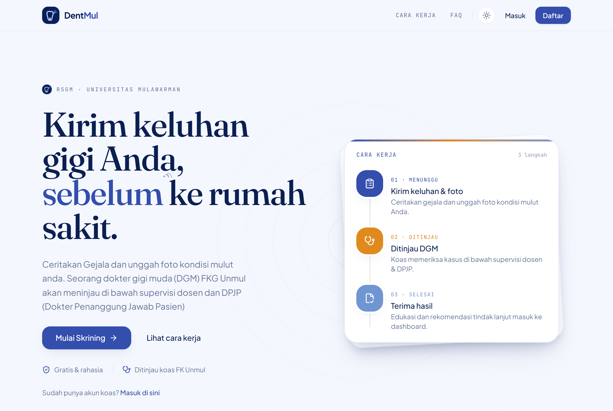
    <figcaption><b>Gambar 1.1</b> — Halaman muka DentMul. Panel di sebelah kanan merangkum tiga langkah utama layanan ini.</figcaption>
  </figure>

  <div class="box tip">
    <span class="t">Gratis</span>
    <p>Layanan skrining awal DentMul tidak dipungut biaya. Data dan foto yang Anda kirim hanya digunakan untuk keperluan skrining dan hanya dapat diakses oleh tim yang menangani kasus Anda.</p>
  </div>

  <h3 id="s12">1.2 Siapa saja yang terlibat</h3>
  <p>Terdapat empat peran pengguna di dalam aplikasi. Setiap peran memiliki tampilan dan kewenangan yang berbeda.</p>

  <div class="rolecards">
    <div class="rolecard">
      <div class="hd"><div class="ic">🧑</div><h4>Pasien</h4></div>
      <p>Mendaftar sendiri, mengirim keluhan beserta foto, memantau status, dan membaca hasil skrining.</p>
    </div>
    <div class="rolecard">
      <div class="hd"><div class="ic">🩺</div><h4>Koas / DGM</h4></div>
      <p>Meninjau keluhan yang masuk, menentukan kategori kasus, lalu menulis edukasi dan rekomendasi untuk pasien.</p>
    </div>
    <div class="rolecard">
      <div class="hd"><div class="ic">🎓</div><h4>Dosen Pembimbing</h4></div>
      <p>Memeriksa edukasi yang ditulis koas, lalu menyetujui (ACC) atau menolaknya untuk direvisi.</p>
    </div>
    <div class="rolecard">
      <div class="hd"><div class="ic">⚙️</div><h4>Admin</h4></div>
      <p>Mengelola akun: menambah, mengubah, mereset password, serta mengaktifkan atau menonaktifkan pengguna.</p>
    </div>
  </div>

  <div class="box">
    <span class="t">Catatan</span>
    <p>
      Hanya <strong>pasien</strong> yang dapat mendaftar sendiri lewat aplikasi. Akun Koas,
      Dosen, dan Admin dibuatkan oleh Admin. Bila Anda seorang koas atau dosen dan belum
      memiliki akun, hubungi Admin FKG Unmul.
    </p>
  </div>

  <h3 id="s13">1.3 Perjalanan satu kasus</h3>
  <p>
    Setiap keluhan yang dikirim disebut satu <strong>kasus</strong>, dan setiap kasus selalu
    berada pada salah satu dari empat status berikut. Status inilah yang Anda lihat sebagai
    label berwarna di seluruh aplikasi.
  </p>

  <div class="flow">
    <div class="flow-row">
      <div class="flow-node wait">
        <div class="dot">1</div>
        <div class="nm">Menunggu</div>
        <div class="ds">Pasien sudah mengirim keluhan. Kasus masuk antrean.</div>
      </div>
      <div class="flow-arrow">›</div>
      <div class="flow-node review">
        <div class="dot">2</div>
        <div class="nm">Ditinjau</div>
        <div class="ds">Koas membuka kasus dan mulai menilai.</div>
      </div>
      <div class="flow-arrow">›</div>
      <div class="flow-node acc">
        <div class="dot">3</div>
        <div class="nm">Menunggu ACC</div>
        <div class="ds">Edukasi koas menunggu persetujuan dosen.</div>
      </div>
      <div class="flow-arrow">›</div>
      <div class="flow-node done">
        <div class="dot">4</div>
        <div class="nm">Selesai</div>
        <div class="ds">Dosen menyetujui. Hasil terlihat oleh pasien.</div>
      </div>
    </div>
    <div class="flow-back">
      Bila dosen menekan <b>Tolak</b>, kasus kembali ke status <strong>Ditinjau</strong> agar koas dapat merevisi edukasinya, lalu mengirim ulang untuk di-ACC.
    </div>
  </div>

  <div class="box warn">
    <span class="t">Penting untuk pasien</span>
    <p>
      Edukasi dan rekomendasi <strong>baru dapat Anda baca setelah status menjadi
      Selesai</strong>, yaitu setelah disetujui dosen pembimbing. Selama status masih
      Menunggu, Ditinjau, atau Menunggu ACC, bagian Hasil &amp; Rekomendasi memang belum terisi.
    </p>
  </div>

  <figure>
    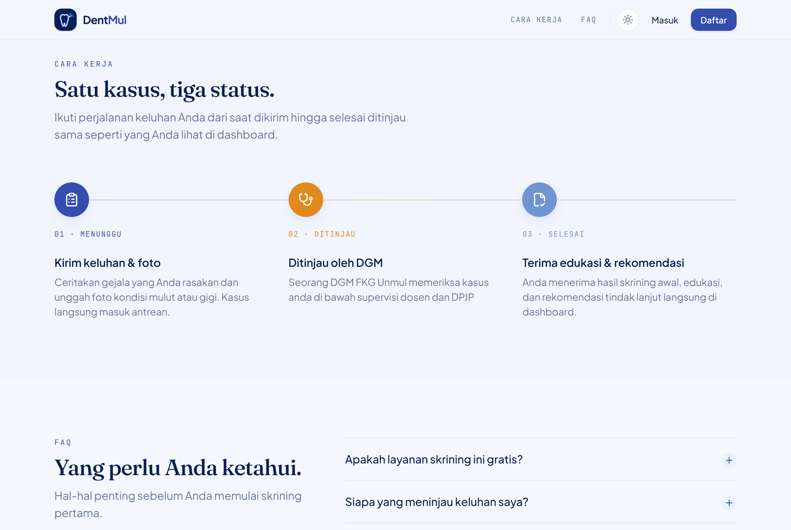
    <figcaption><b>Gambar 1.2</b> — Bagian <strong>Cara Kerja</strong> pada halaman muka menjelaskan alur yang sama dalam tiga langkah sederhana.</figcaption>
  </figure>
</section>

<!-- ==================== BAB 2 ==================== -->
<section class="chapter" id="bab2">
  <div class="chapter-head">
    <div class="chapter-num">02</div>
    <div>
      <h2>Persiapan dan Masuk Aplikasi</h2>
      <p class="sub">Perangkat yang dibutuhkan, cara mendaftar akun pasien, cara masuk dan keluar, serta mengatur tampilan.</p>
    </div>
  </div>

  <h3 id="s21">2.1 Yang perlu Anda siapkan</h3>
  <ul class="plain">
    <li>Telepon genggam, tablet, atau komputer yang terhubung internet.</li>
    <li>Peramban (<em>browser</em>) yang cukup baru — Google Chrome, Microsoft Edge, Safari, atau Firefox.</li>
    <li>Alamat surel (email) aktif dan nomor telepon yang bisa dihubungi.</li>
    <li>Nomor Induk Kependudukan (NIK) 16 digit sesuai KTP — khusus untuk pendaftaran pasien.</li>
    <li>Foto kondisi gigi atau mulut bila ada keluhan yang terlihat (opsional).</li>
  </ul>
  <p>Buka alamat aplikasi DentMul di peramban Anda. Halaman muka akan menampilkan tombol <strong>Masuk</strong> dan <strong>Daftar</strong> di pojok kanan atas.</p>

  <h3 id="s22">2.2 Mendaftar akun pasien</h3>
  <p>Pendaftaran mandiri hanya tersedia untuk pasien. Ikuti langkah berikut.</p>

  <ol class="steps">
    <li><p>Dari halaman muka, tekan tombol <strong>Daftar</strong> (atau <strong>Mulai Skrining</strong>).</p></li>
    <li><p>Isi seluruh kolom pada formulir <strong>Mulai skrining Anda</strong>. Semua kolom wajib diisi.</p></li>
    <li><p>Tekan tombol <strong>Daftar sekarang</strong>.</p></li>
    <li><p>Bila data Anda benar, aplikasi akan langsung memasukkan Anda ke halaman <strong>Beranda</strong> pasien — Anda tidak perlu masuk (login) lagi.</p></li>
  </ol>

  <figure>
    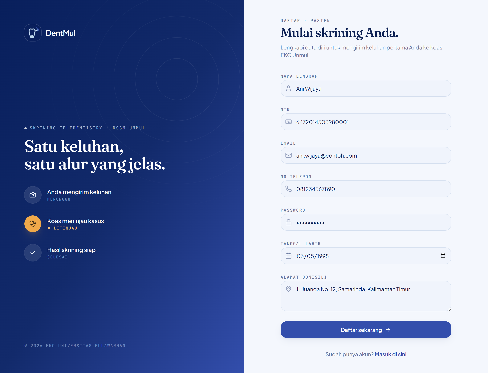
    <figcaption><b>Gambar 2.1</b> — Formulir pendaftaran pasien beserta contoh pengisian.</figcaption>
  </figure>

  <h4>Aturan pengisian setiap kolom</h4>
  <table class="compact">
    <thead>
      <tr><th style="width: 26%">Kolom</th><th style="width: 34%">Aturan</th><th>Contoh / catatan</th></tr>
    </thead>
    <tbody>
      <tr><td><strong>Nama Lengkap</strong></td><td>Minimal 3 huruf, sesuai KTP</td><td>Ani Wijaya</td></tr>
      <tr><td><strong>NIK</strong></td><td>Tepat 16 digit angka, tanpa spasi atau tanda baca</td><td>Satu NIK hanya bisa dipakai untuk satu akun</td></tr>
      <tr><td><strong>Email</strong></td><td>Alamat surel yang valid dan belum pernah dipakai</td><td>nama@email.com</td></tr>
      <tr><td><strong>No Telepon</strong></td><td>10–15 angka, boleh diawali tanda +</td><td>081234567890. Huruf otomatis dibuang saat diketik.</td></tr>
      <tr><td><strong>Password</strong></td><td>Minimal 6 karakter</td><td>Gunakan kombinasi yang mudah Anda ingat namun sulit ditebak orang lain</td></tr>
      <tr><td><strong>Tanggal Lahir</strong></td><td>Wajib diisi, tidak boleh tanggal yang akan datang</td><td>Dipakai untuk menghitung usia Anda secara otomatis</td></tr>
      <tr><td><strong>Alamat Domisili</strong></td><td>Minimal 5 karakter</td><td>Alamat tempat tinggal saat ini, bukan alamat KTP bila berbeda</td></tr>
    </tbody>
  </table>

  <div class="box">
    <span class="t">Bila muncul pesan merah</span>
    <p>
      <strong>“Email sudah digunakan!”</strong> berarti Anda pernah mendaftar dengan surel
      tersebut — silakan gunakan menu <strong>Masuk</strong>.
      <strong>“NIK sudah terdaftar!”</strong> berarti NIK itu sudah dipakai akun lain;
      periksa kembali angkanya, dan bila sudah benar hubungi Admin.
    </p>
  </div>

  <h3 id="s23">2.3 Masuk dan keluar</h3>
  <ol class="steps">
    <li><p>Tekan <strong>Masuk</strong> pada halaman muka.</p></li>
    <li><p>Ketik <strong>Email</strong> dan <strong>Password</strong> Anda.</p></li>
    <li><p>Tekan tombol <strong>Masuk</strong>. Aplikasi akan otomatis mengantar Anda ke halaman yang sesuai dengan peran Anda.</p></li>
  </ol>

  <figure>
    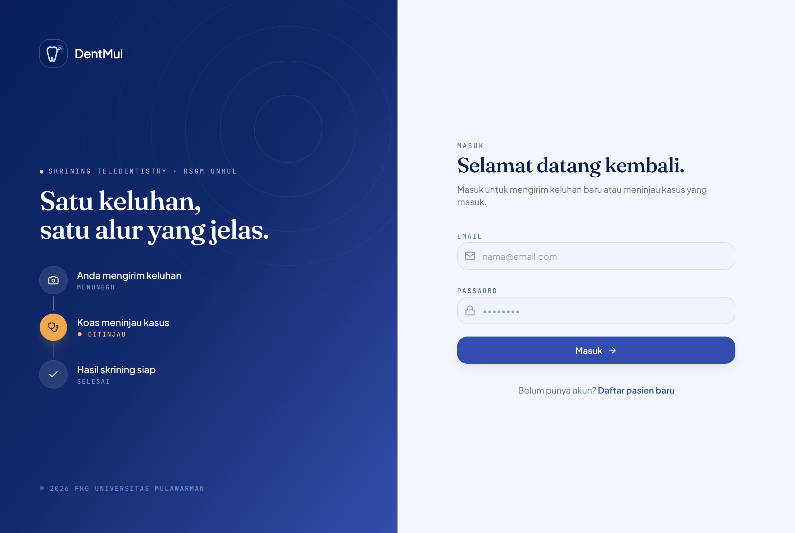
    <figcaption><b>Gambar 2.2</b> — Halaman <strong>Masuk</strong>. Satu halaman ini dipakai oleh semua peran: pasien, koas, dosen, dan admin.</figcaption>
  </figure>

  <p>
    Untuk keluar, tekan menu <strong>Keluar</strong> yang berada di bagian bawah menu
    samping (pada layar komputer) atau di bilah menu bawah (pada telepon genggam).
    Selalu keluar bila Anda memakai perangkat bersama.
  </p>

  <div class="box warn">
    <span class="t">Perhatian</span>
    <p>
      DentMul <strong>belum memiliki fitur “lupa password” mandiri</strong>. Bila Anda lupa
      kata sandi, hubungi Admin untuk melakukan <strong>Reset Password</strong>. Simpan kata
      sandi Anda di tempat yang aman.
    </p>
  </div>

  <h3 id="s24">2.4 Mode terang dan mode gelap</h3>
  <p>
    Seluruh halaman DentMul mendukung dua tampilan. Tekan ikon matahari atau bulan pada
    bagian <strong>Tampilan</strong> di menu samping untuk berpindah. Pilihan Anda akan
    diingat oleh peramban, sehingga tidak perlu diatur ulang setiap kali masuk.
  </p>

  <figure>
    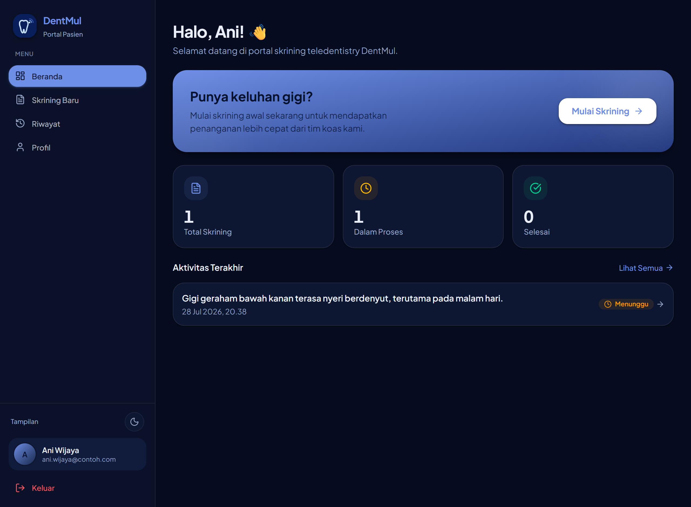
    <figcaption><b>Gambar 2.3</b> — Tampilan yang sama dalam <strong>mode gelap</strong>, berguna saat digunakan di ruangan yang minim cahaya.</figcaption>
  </figure>
</section>

<!-- ==================== BAB 3 ==================== -->
<section class="chapter" id="bab3">
  <div class="chapter-head">
    <div class="chapter-num">03</div>
    <div>
      <h2>Panduan Pasien</h2>
      <p class="sub">Mengirim keluhan, melampirkan foto, memantau status, dan membaca hasil skrining Anda.</p>
    </div>
  </div>

  <h3 id="s31">3.1 Mengenal halaman Beranda</h3>
  <p>
    Setelah masuk, Anda akan berada di halaman <strong>Beranda</strong>. Di sini terdapat
    sapaan, satu kartu ajakan untuk memulai skrining, tiga kartu ringkasan, dan daftar
    <strong>Aktivitas Terakhir</strong>.
  </p>

  <figure>
    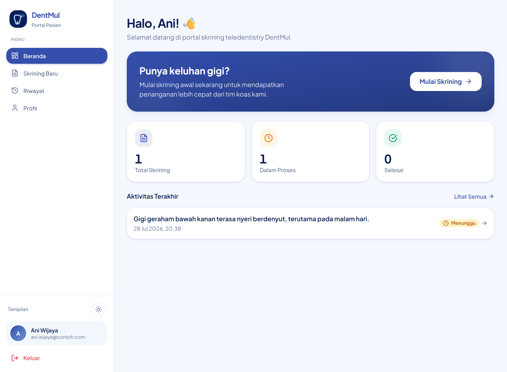
    <figcaption><b>Gambar 3.1</b> — Halaman <strong>Beranda</strong> pasien.</figcaption>
  </figure>

  <table>
    <thead><tr><th style="width: 30%">Kartu</th><th>Artinya</th></tr></thead>
    <tbody>
      <tr><td><strong>Total Skrining</strong></td><td>Jumlah seluruh keluhan yang pernah Anda kirim.</td></tr>
      <tr><td><strong>Dalam Proses</strong></td><td>Keluhan yang belum selesai ditangani — status Menunggu, Ditinjau, atau Menunggu ACC.</td></tr>
      <tr><td><strong>Selesai</strong></td><td>Keluhan yang hasilnya sudah dapat Anda baca.</td></tr>
    </tbody>
  </table>

  <figure>
    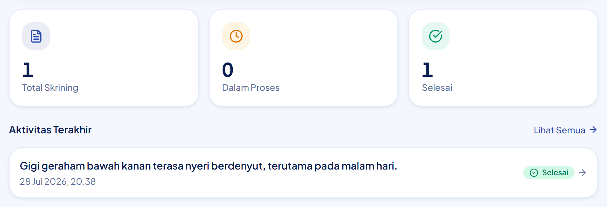
    <figcaption><b>Gambar 3.2</b> — Tiga kartu ringkasan dan daftar <strong>Aktivitas Terakhir</strong> yang memuat tiga skrining terbaru Anda.</figcaption>
  </figure>

  <figure class="narrow">
    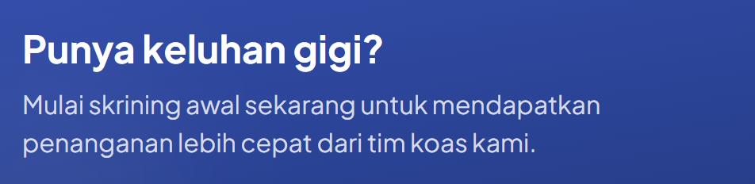
    <figcaption><b>Gambar 3.3</b> — Tekan <strong>Mulai Skrining</strong> pada kartu ini untuk mengirim keluhan baru.</figcaption>
  </figure>

  <h3 id="s32">3.2 Mengirim skrining baru</h3>
  <p>
    Pengisian keluhan dibagi menjadi <strong>empat langkah</strong>. Anda dapat menekan
    <strong>Kembali</strong> kapan saja untuk memperbaiki isian sebelumnya. Data baru
    terkirim setelah Anda menekan <strong>Kirim Skrining</strong> di langkah terakhir.
  </p>

  <h4>Langkah 1 — Keluhan Utama</h4>
  <p>
    Ini bagian terpenting. Ceritakan keluhan Anda apa adanya; semakin jelas ceritanya,
    semakin tepat penilaian yang dapat diberikan.
  </p>
  <ol class="steps">
    <li><p><strong>Apa keluhan utama Anda?</strong> — wajib diisi, minimal 5 karakter. Tuliskan gigi mana, rasa sakitnya seperti apa, dan kapan muncul.</p></li>
    <li><p><strong>Sudah berapa lama keluhan dirasakan?</strong> — wajib diisi. Contoh: “3 hari”, “1 minggu”.</p></li>
    <li><p><strong>Di bagian mana yang sakit?</strong> — boleh dikosongkan. Contoh: “Rahang bawah kiri”.</p></li>
    <li><p><strong>Seberapa sakit yang Anda rasakan?</strong> — geser tombol pada garis skala 1 sampai 10.</p></li>
    <li><p><strong>Keluhan tambahan</strong> — boleh dikosongkan. Tuliskan hal lain yang ingin Anda sampaikan.</p></li>
  </ol>

  <figure>
    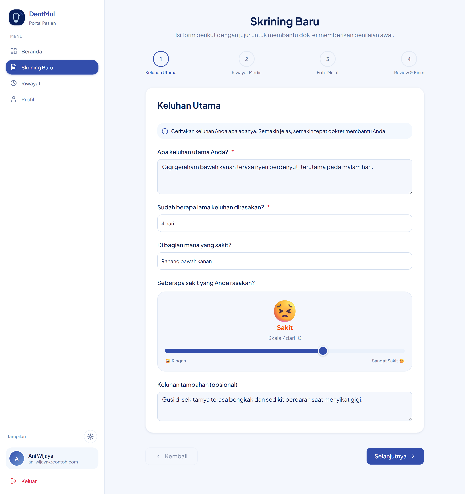
    <figcaption><b>Gambar 3.4</b> — Langkah 1, <strong>Keluhan Utama</strong>, beserta contoh pengisian. Tanda bintang merah (*) menandai kolom wajib.</figcaption>
  </figure>

  <figure>
    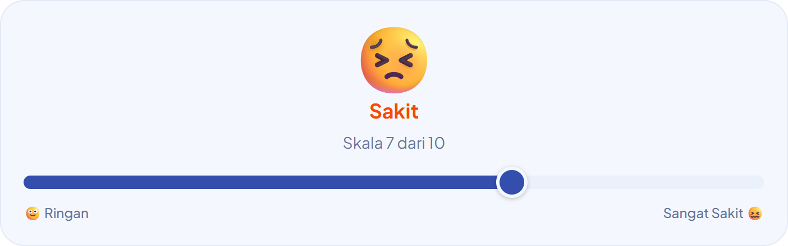
    <figcaption><b>Gambar 3.5</b> — Skala nyeri. Wajah dan keterangan berubah mengikuti angka: 1–2 Ringan, 3–4 Cukup terasa, 5–6 Mengganggu, 7–8 Sakit, 9–10 Sangat sakit.</figcaption>
  </figure>

  <h4>Langkah 2 — Riwayat Medis</h4>
  <p>
    Semua kolom di langkah ini <strong>boleh dikosongkan</strong> bila tidak ada. Namun bila
    ada, mohon diisi sejujurnya — informasi ini dipakai untuk memastikan tindakan yang aman
    bagi kondisi kesehatan Anda.
  </p>
  <ul class="plain">
    <li><strong>Riwayat penyakit</strong> — misalnya diabetes, hipertensi, asma, penyakit jantung.</li>
    <li><strong>Alergi obat atau makanan</strong> — sangat penting. Koas akan melihat peringatan khusus bila kolom ini terisi.</li>
    <li><strong>Obat yang rutin dikonsumsi</strong> — termasuk obat dari dokter maupun jamu/suplemen.</li>
    <li><strong>Kebiasaan tertentu</strong> — misalnya merokok atau menggeretakkan gigi saat tidur.</li>
  </ul>

  <figure>
    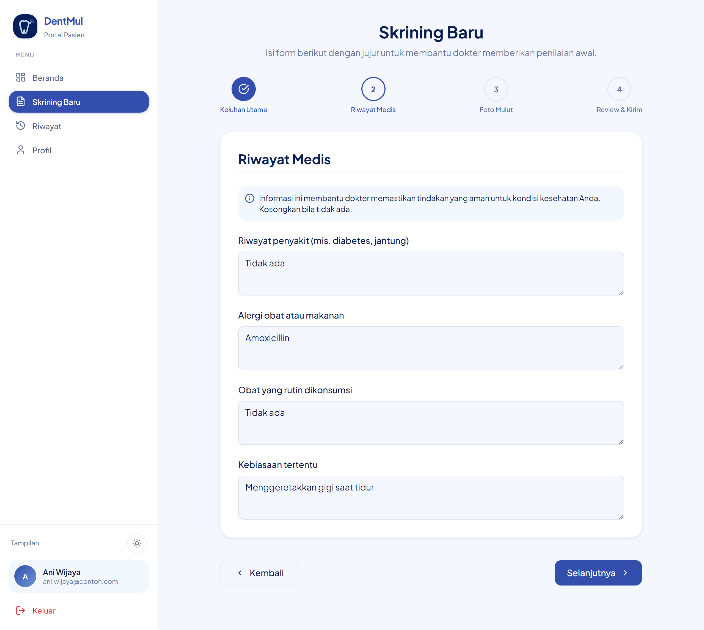
    <figcaption><b>Gambar 3.6</b> — Langkah 2, <strong>Riwayat Medis</strong>.</figcaption>
  </figure>

  <h4>Langkah 3 — Foto Rongga Mulut</h4>
  <p>
    Langkah ini <strong>opsional</strong>, tetapi sangat membantu. Tekan area bergaris putus-putus
    bertuliskan <strong>Ketuk untuk ambil atau pilih foto</strong>, lalu ambil foto langsung
    dengan kamera atau pilih foto dari galeri.
  </p>

  <table class="compact">
    <thead><tr><th style="width: 34%">Batasan</th><th>Keterangan</th></tr></thead>
    <tbody>
      <tr><td><strong>Jumlah</strong></td><td>Maksimal 5 foto per skrining</td></tr>
      <tr><td><strong>Jenis berkas</strong></td><td>JPG atau PNG saja</td></tr>
      <tr><td><strong>Ukuran</strong></td><td>Maksimal 5 MB per foto</td></tr>
    </tbody>
  </table>

  <figure>
    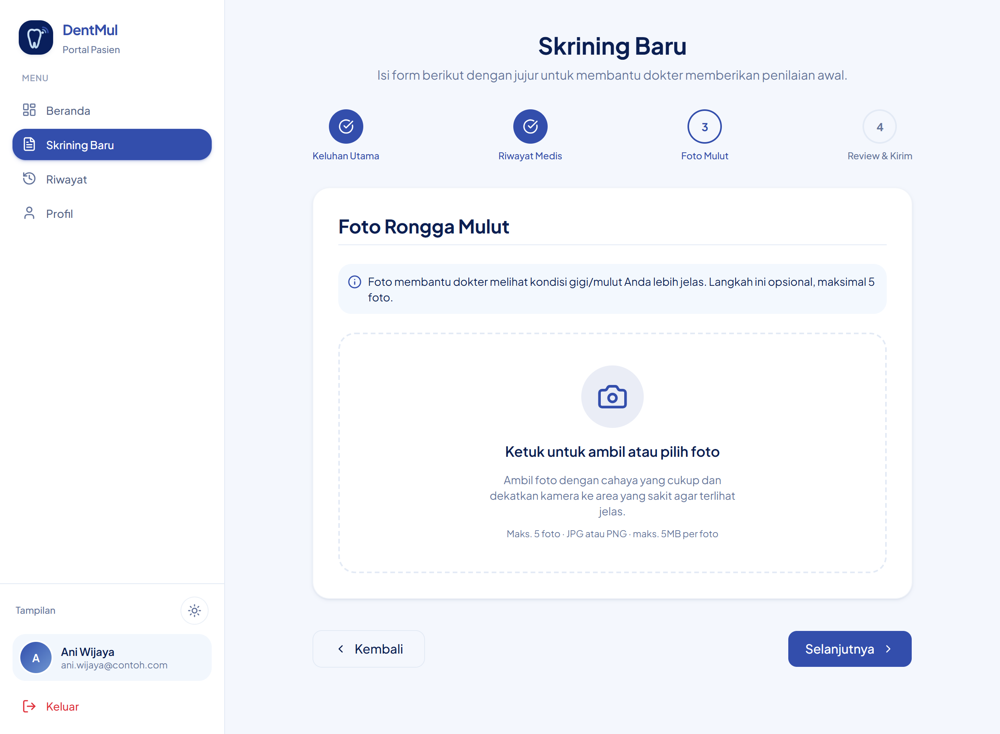
    <figcaption><b>Gambar 3.7</b> — Langkah 3, <strong>Foto Rongga Mulut</strong>, sebelum ada foto yang dipilih.</figcaption>
  </figure>

  <figure>
    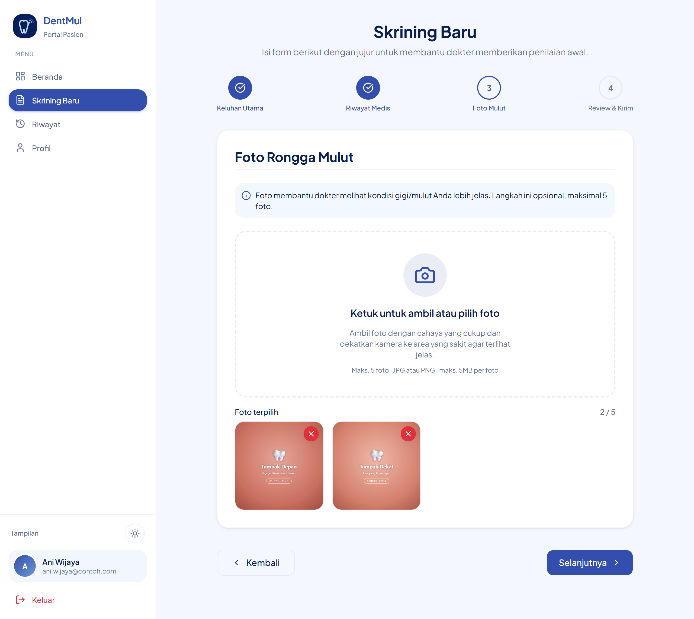
    <figcaption><b>Gambar 3.8</b> — Foto yang sudah dipilih tampil sebagai pratinjau. Hitungan <strong>2 / 5</strong> menunjukkan sisa kuota. Tekan tanda silang merah untuk membatalkan sebuah foto.</figcaption>
  </figure>

  <h4>Langkah 4 — Review &amp; Kirim</h4>
  <p>
    Periksa kembali seluruh isian Anda. Kolom yang tidak Anda isi akan tertulis
    <em>Tidak diisi</em>. Bila ada yang perlu diperbaiki, tekan tombol <strong>Ubah</strong>
    pada bagian yang bersangkutan.
  </p>
  <ol class="steps">
    <li><p>Baca kembali ringkasan <strong>Keluhan</strong>, <strong>Riwayat Medis</strong>, dan <strong>Foto</strong>.</p></li>
    <li><p>Baca pernyataan persetujuan di bagian bawah.</p></li>
    <li><p>Tekan <strong>Kirim Skrining</strong>. Tunggu sampai proses selesai — jangan menutup halaman saat foto sedang diunggah.</p></li>
  </ol>

  <figure>
    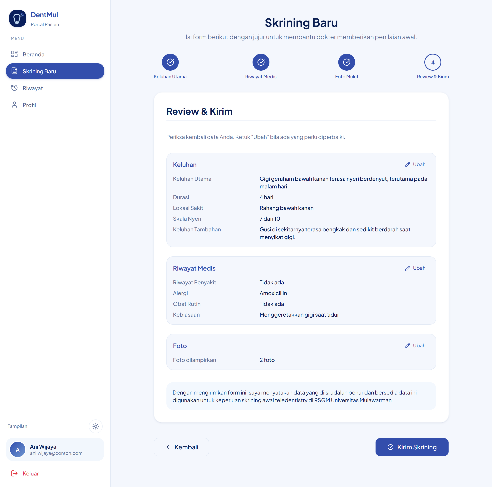
    <figcaption><b>Gambar 3.9</b> — Langkah 4, <strong>Review &amp; Kirim</strong>.</figcaption>
  </figure>

  <figure>
    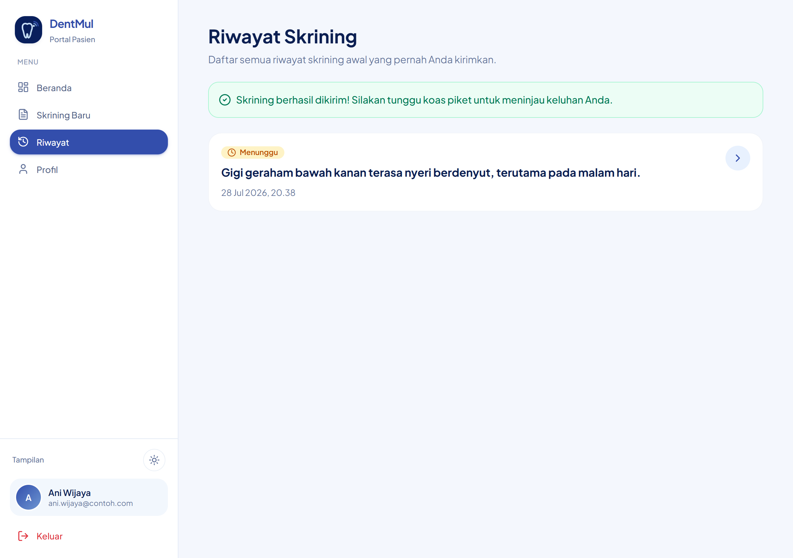
    <figcaption><b>Gambar 3.10</b> — Setelah berhasil, Anda diantar ke halaman <strong>Riwayat</strong> dengan pemberitahuan hijau.</figcaption>
  </figure>

  <div class="box danger">
    <span class="t">Tidak dapat diubah</span>
    <p>
      Skrining yang sudah terkirim <strong>tidak dapat diubah maupun dihapus</strong>, dan
      foto tidak dapat ditambah lagi. Karena itu, periksa dengan teliti di langkah 4 sebelum
      menekan Kirim. Bila ada informasi penting yang terlewat, kirimkan skrining baru atau
      sampaikan langsung kepada koas melalui WhatsApp setelah hasil keluar.
    </p>
  </div>

  <h3 id="s33">3.3 Tips memotret rongga mulut</h3>
  <div class="box tip">
    <span class="t">Agar foto mudah dibaca koas</span>
    <ul class="plain" style="margin-bottom: 0">
      <li>Ambil foto di tempat terang, atau minta bantuan orang lain menyorotkan senter telepon.</li>
      <li>Dekatkan kamera ke area yang sakit, tetapi pastikan gambar tetap fokus (tidak buram).</li>
      <li>Buka mulut lebar; bila perlu, tarik pipi dengan jari bersih atau sendok agar gigi terlihat.</li>
      <li>Ambil dua sampai tiga sudut: tampak depan, tampak dekat area yang sakit, dan tampak atas/bawah.</li>
      <li>Bersihkan sisa makanan terlebih dahulu agar kondisi gigi terlihat jelas.</li>
    </ul>
  </div>

  <h3 id="s34">3.4 Memantau status di Riwayat</h3>
  <p>
    Menu <strong>Riwayat</strong> memuat seluruh skrining yang pernah Anda kirim, lengkap
    dengan label statusnya. Tekan salah satu baris untuk membuka detailnya.
  </p>

  <figure>
    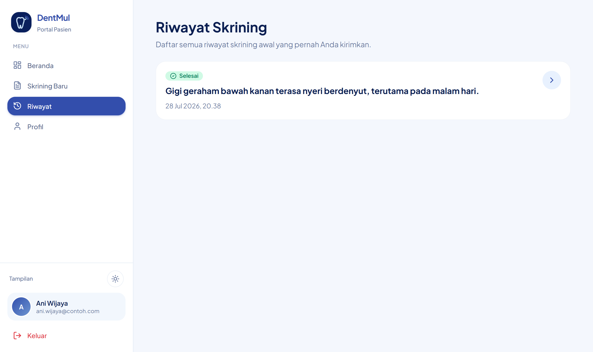
    <figcaption><b>Gambar 3.11</b> — Halaman <strong>Riwayat Skrining</strong>.</figcaption>
  </figure>

  <p>Arti setiap label status bagi Anda sebagai pasien:</p>
  <table>
    <thead><tr><th style="width: 26%">Label</th><th>Artinya bagi Anda</th></tr></thead>
    <tbody>
      <tr><td><span class="badge b-wait">Menunggu</span></td><td>Keluhan sudah masuk dan sedang mengantre. Belum ada koas yang membukanya.</td></tr>
      <tr><td><span class="badge b-review">Ditinjau</span></td><td>Seorang koas sedang menilai kasus Anda.</td></tr>
      <tr><td><span class="badge b-acc">Menunggu ACC</span></td><td>Koas sudah menulis edukasi; kini menunggu persetujuan dosen pembimbing.</td></tr>
      <tr><td><span class="badge b-done">Selesai</span></td><td>Sudah disetujui dosen. Hasil dan rekomendasi dapat Anda baca.</td></tr>
    </tbody>
  </table>

  <figure>
    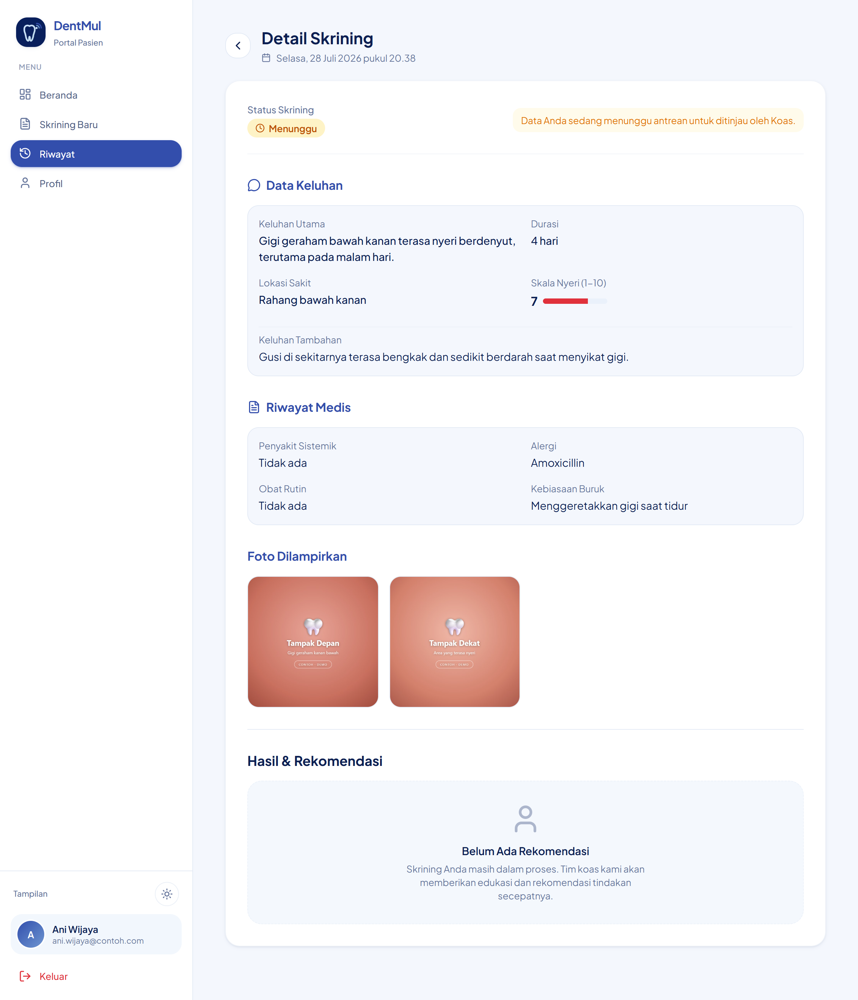
    <figcaption><b>Gambar 3.12</b> — Halaman <strong>Detail Skrining</strong> saat status masih <strong>Menunggu</strong>. Seluruh data yang Anda isi ditampilkan kembali, dan bagian <strong>Hasil &amp; Rekomendasi</strong> masih kosong.</figcaption>
  </figure>

  <h3 id="s35">3.5 Membaca hasil dan rekomendasi</h3>
  <p>
    Ketika status berubah menjadi <strong>Selesai</strong>, buka kembali detail skrining
    tersebut. Bagian <strong>Hasil &amp; Rekomendasi</strong> kini berisi pesan dari koas
    yang menangani kasus Anda.
  </p>

  <figure class="wide">
    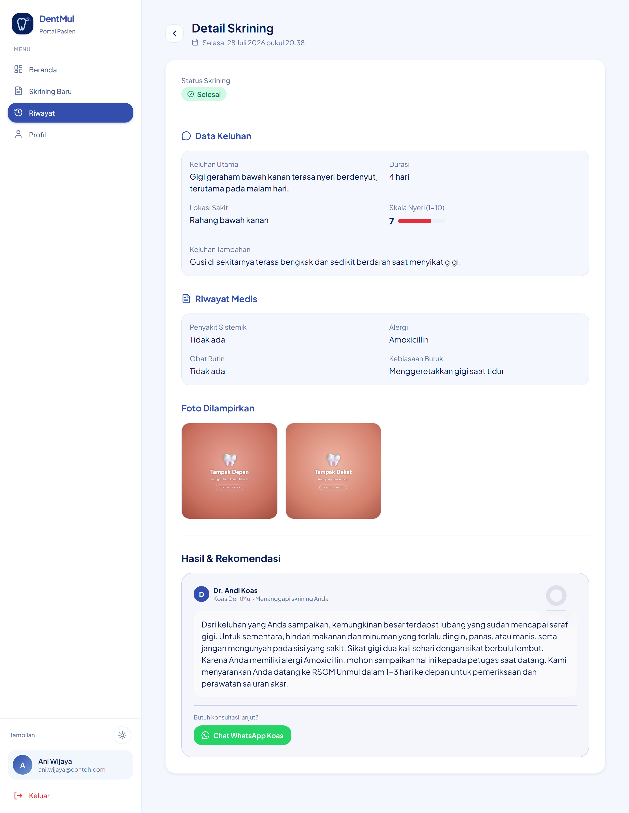
    <figcaption><b>Gambar 3.13</b> — Halaman detail yang sama setelah statusnya menjadi <strong>Selesai</strong>.</figcaption>
  </figure>

  <figure>
    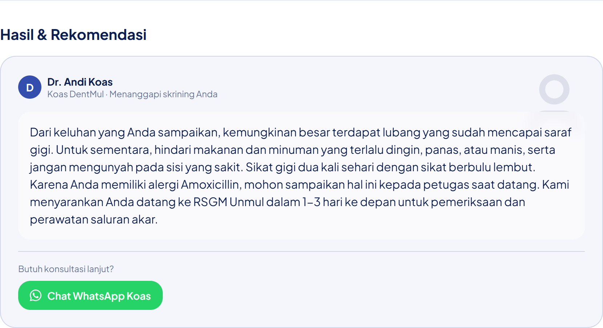
    <figcaption><b>Gambar 3.14</b> — Kartu <strong>Hasil &amp; Rekomendasi</strong> memuat nama koas, isi edukasi, dan tombol <strong>Chat WhatsApp Koas</strong>.</figcaption>
  </figure>

  <p>
    Tombol hijau <strong>Chat WhatsApp Koas</strong> akan membuka percakapan WhatsApp dengan
    koas tersebut, sehingga Anda dapat bertanya lebih lanjut.
  </p>

  <div class="box">
    <span class="t">Tombol WhatsApp tidak muncul?</span>
    <p>
      Tombol ini hanya tampil bila koas yang menangani sudah mencantumkan nomor telepon di
      profilnya. Bila tidak muncul, hubungi RSGM Unmul melalui kontak yang tercantum di
      lampiran buku ini.
    </p>
  </div>

  <h3 id="s36">3.6 Memperbarui profil</h3>
  <p>
    Menu <strong>Profil</strong> terbagi dua. Bagian <strong>Data Identitas</strong>
    (Nama Lengkap, Email, NIK) bertanda gembok dan tidak dapat Anda ubah sendiri — hubungi
    Admin bila ada kesalahan. Bagian <strong>Data yang Bisa Diubah</strong> berisi No
    Telepon, Tanggal Lahir, Jenis Kelamin, dan Alamat.
  </p>

  <figure>
    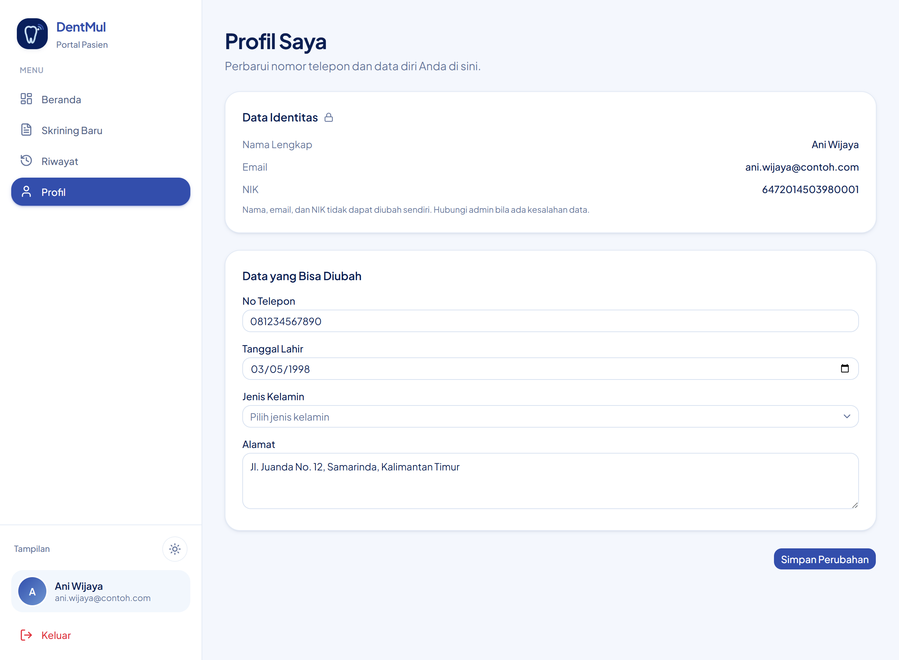
    <figcaption><b>Gambar 3.15</b> — Halaman <strong>Profil Saya</strong>. Tekan <strong>Simpan Perubahan</strong> setelah selesai menyunting.</figcaption>
  </figure>

  <div class="box tip">
    <span class="t">Saran</span>
    <p>Pastikan <strong>No Telepon</strong> dan <strong>Jenis Kelamin</strong> Anda terisi. Nomor telepon memudahkan tim RSGM menghubungi Anda, dan data jenis kelamin membantu koas menilai kasus Anda.</p>
  </div>

  <h3 id="s37">3.7 Tampilan di telepon genggam</h3>
  <p>
    DentMul dirancang agar nyaman dipakai lewat telepon genggam. Pada layar kecil, menu
    berpindah ke bilah bawah dengan tombol <strong>Skrining</strong> yang menonjol di
    tengah.
  </p>

  <figure class="mobile">
    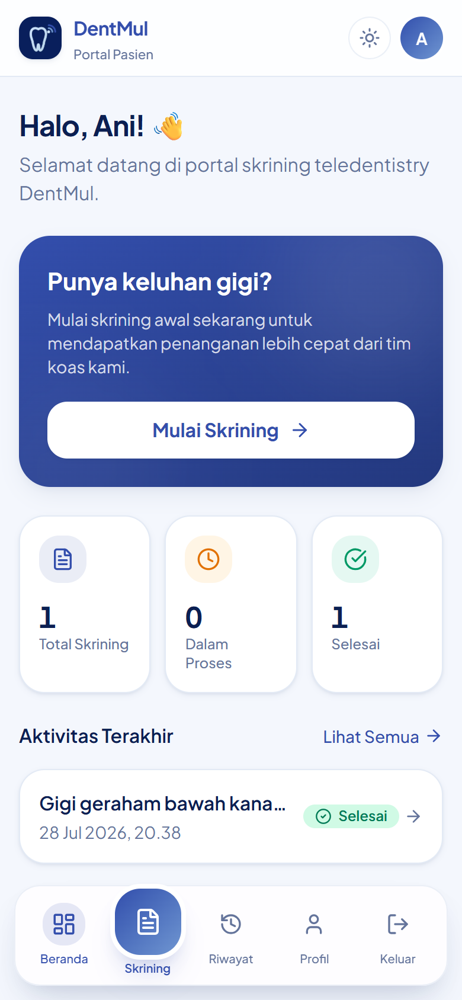
    <figcaption><b>Gambar 3.16</b> — Tampilan <strong>Beranda</strong> pada telepon genggam beserta bilah menu bawah.</figcaption>
  </figure>

  <figure class="mobile">
    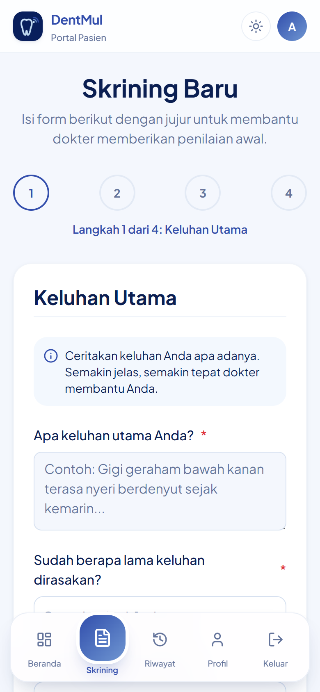
    <figcaption><b>Gambar 3.17</b> — Pengisian skrining pada telepon genggam. Nama langkah ditampilkan sebagai teks <em>“Langkah 1 dari 4”</em>.</figcaption>
  </figure>

  <figure class="mobile">
    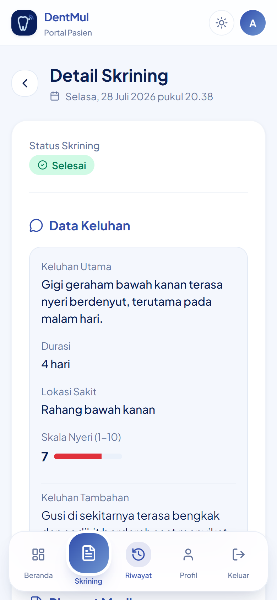
    <figcaption><b>Gambar 3.18</b> — Halaman detail skrining pada telepon genggam.</figcaption>
  </figure>
</section>

<!-- ==================== BAB 4 ==================== -->
<section class="chapter" id="bab4">
  <div class="chapter-head">
    <div class="chapter-num">04</div>
    <div>
      <h2>Panduan Koas</h2>
      <p class="sub">Membaca antrean kasus, menilai keluhan pasien, lalu menulis edukasi untuk disetujui dosen pembimbing.</p>
    </div>
  </div>

  <h3 id="s41">4.1 Membaca Dashboard</h3>
  <p>
    Setelah masuk sebagai koas, Anda langsung berada di <strong>Dashboard</strong> Portal
    Koas Piket. Bagian atas menampilkan sapaan dan jumlah kasus yang perlu ditangani hari
    ini, disusul tiga kartu ringkasan.
  </p>

  <figure class="wide">
    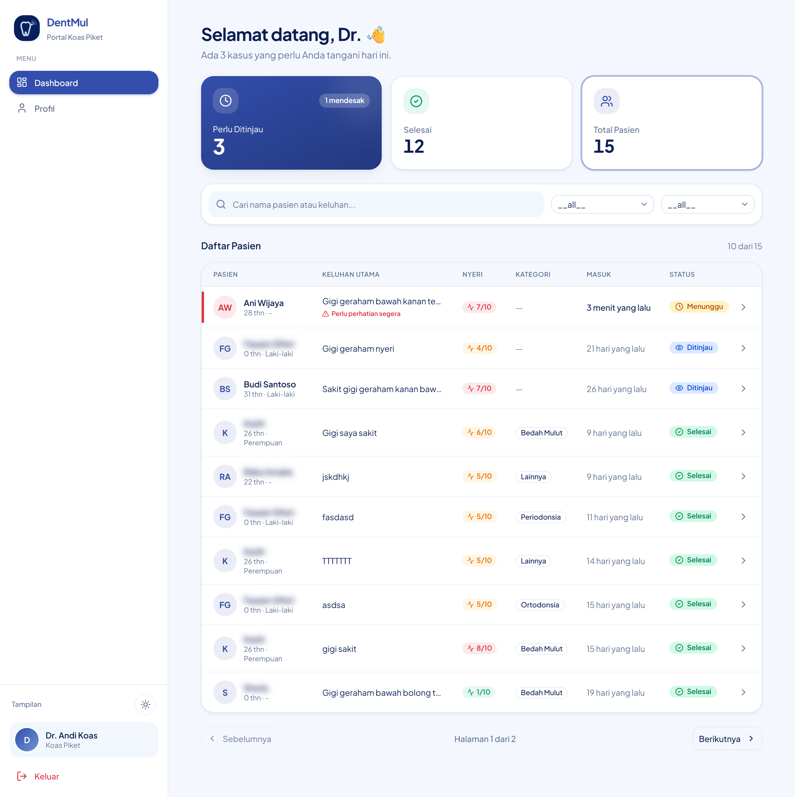
    <figcaption><b>Gambar 4.1</b> — Dashboard koas. Nama pasien sungguhan diburamkan pada gambar ini.</figcaption>
  </figure>

  <figure>
    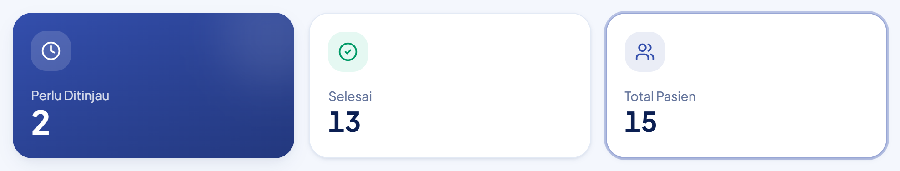
    <figcaption><b>Gambar 4.2</b> — Tiga kartu ringkasan. Ketiganya dapat ditekan untuk menyaring daftar di bawahnya.</figcaption>
  </figure>

  <table>
    <thead><tr><th style="width: 28%">Kartu</th><th>Artinya</th></tr></thead>
    <tbody>
      <tr><td><strong>Perlu Ditinjau</strong></td><td>Kasus berstatus Menunggu dan Ditinjau — inilah pekerjaan Anda. Lencana <strong>“N mendesak”</strong> menghitung kasus baru dengan skala nyeri 7 atau lebih.</td></tr>
      <tr><td><strong>Selesai</strong></td><td>Kasus yang edukasinya sudah disetujui dosen.</td></tr>
      <tr><td><strong>Total Pasien</strong></td><td>Jumlah seluruh kasus yang pernah masuk ke sistem.</td></tr>
    </tbody>
  </table>

  <p>Daftar di bawahnya berisi kolom <strong>Pasien</strong>, <strong>Keluhan Utama</strong>, <strong>Nyeri</strong>, <strong>Kategori</strong>, <strong>Masuk</strong>, dan <strong>Status</strong>, dengan 10 baris per halaman.</p>

  <div class="box danger">
    <span class="t">Kasus mendesak</span>
    <p>
      Baris dengan <strong>garis merah di tepi kiri</strong> dan tulisan
      <strong>“Perlu perhatian segera”</strong> adalah kasus baru dengan skala nyeri 7 ke
      atas. Dahulukan kasus-kasus ini.
    </p>
  </div>

  <h3 id="s42">4.2 Mencari dan menyaring kasus</h3>
  <p>
    Gunakan kolom <strong>Cari nama pasien atau keluhan…</strong> lalu tekan Enter untuk
    mencari. Di sebelahnya tersedia dua penyaring: berdasarkan <strong>kategori kasus</strong>
    dan berdasarkan <strong>status</strong>. Tombol silang di ujung kanan menghapus semua
    penyaring sekaligus.
  </p>

  <figure class="wide">
    
    <figcaption><b>Gambar 4.3</b> — Daftar setelah disaring dengan kata kunci nama pasien.</figcaption>
  </figure>

  <h3 id="s43">4.3 Membaca detail kasus</h3>
  <p>
    Tekan salah satu baris untuk membuka <strong>Detail Kasus</strong>. Kolom kiri memuat
    seluruh data pasien, kolom kanan memuat kotak <strong>Tindakan Koas</strong>.
  </p>

  <figure class="wide">
    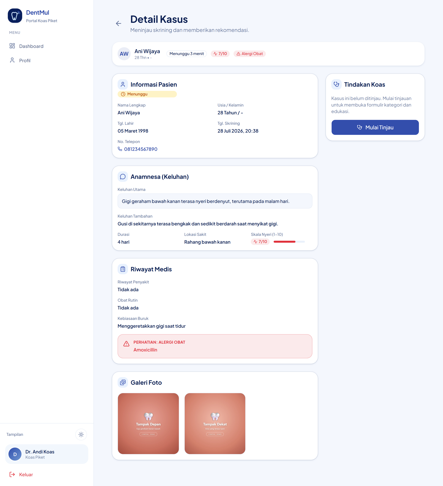
    <figcaption><b>Gambar 4.4</b> — Halaman <strong>Detail Kasus</strong> secara keseluruhan.</figcaption>
  </figure>

  <figure class="narrow">
    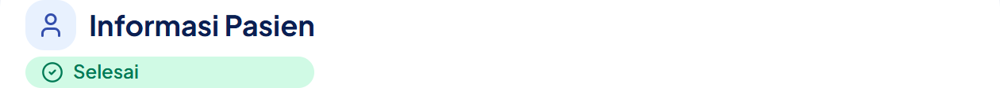
    <figcaption><b>Gambar 4.5</b> — Kartu <strong>Informasi Pasien</strong>. Nomor telepon dapat ditekan untuk langsung menelepon.</figcaption>
  </figure>

  <figure class="narrow">
    
    <figcaption><b>Gambar 4.6</b> — Kartu <strong>Anamnesa (Keluhan)</strong>. Batang skala nyeri berwarna hijau (1–3), kuning (4–6), atau merah (7–10).</figcaption>
  </figure>

  <figure class="narrow">
    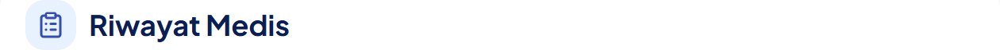
    <figcaption><b>Gambar 4.7</b> — Kartu <strong>Riwayat Medis</strong>. Bila pasien mencantumkan alergi obat, muncul kotak peringatan merah <strong>Perhatian: Alergi Obat</strong>.</figcaption>
  </figure>

  <p>
    Di bawahnya terdapat <strong>Galeri Foto</strong> yang dikirim pasien. Tekan sebuah foto
    untuk memperbesarnya. Bila pasien tidak melampirkan foto, tertulis
    <em>“Pasien tidak melampirkan foto.”</em>
  </p>

  <h3 id="s44">4.4 Meninjau dan mengirim edukasi</h3>

  <ol class="steps">
    <li>
      <p>Pada kotak <strong>Tindakan Koas</strong>, tekan tombol <strong>Mulai Tinjau</strong>. Status kasus berubah dari Menunggu menjadi <strong>Ditinjau</strong>, dan formulir tinjauan terbuka.</p>
    </li>
    <li>
      <p>Pilih <strong>Kategori Jenis Kasus</strong> yang paling sesuai. Kolom ini wajib diisi.</p>
    </li>
    <li>
      <p>Aktifkan sakelar <strong>Pasien Potensial</strong> bila kasus ini cocok Anda tangani sebagai pasien pribadi. Bila tidak, biarkan mati.</p>
    </li>
    <li>
      <p>Isi <strong>Catatan Internal</strong> bila perlu. Catatan ini <strong>tidak pernah ditampilkan kepada pasien</strong> — hanya untuk arsip koas.</p>
    </li>
    <li>
      <p>Tulis <strong>Edukasi &amp; Rekomendasi</strong>, minimal 10 karakter. <strong>Inilah satu-satunya bagian yang akan dibaca pasien</strong>, jadi gunakan bahasa yang mudah dipahami orang awam.</p>
    </li>
    <li>
      <p>Tekan <strong>Kirim Edukasi</strong>, lalu <strong>Ya, Kirim</strong> pada kotak konfirmasi.</p>
    </li>
  </ol>

  <figure class="narrow">
    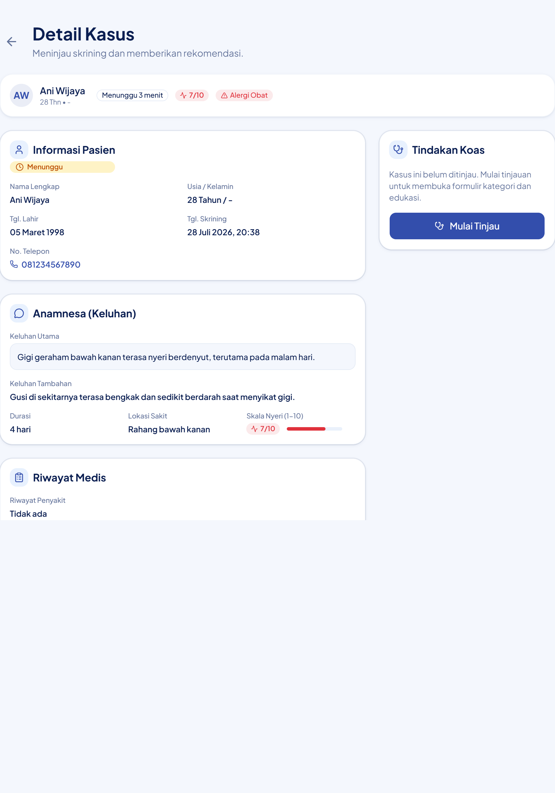
    <figcaption><b>Gambar 4.8</b> — Kotak <strong>Tindakan Koas</strong> sebelum kasus dibuka.</figcaption>
  </figure>

  <figure class="wide">
    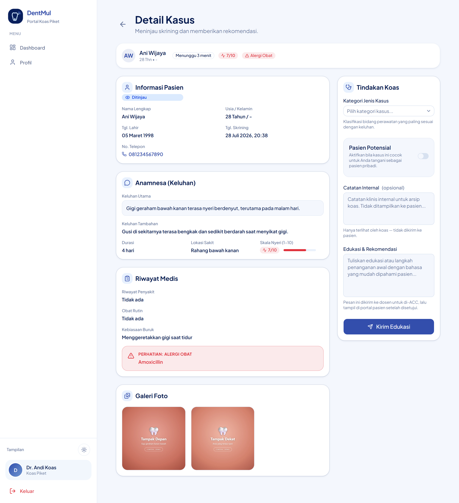
    <figcaption><b>Gambar 4.9</b> — Formulir tinjauan yang terbuka setelah tombol <strong>Mulai Tinjau</strong> ditekan.</figcaption>
  </figure>

  <figure class="wide">
    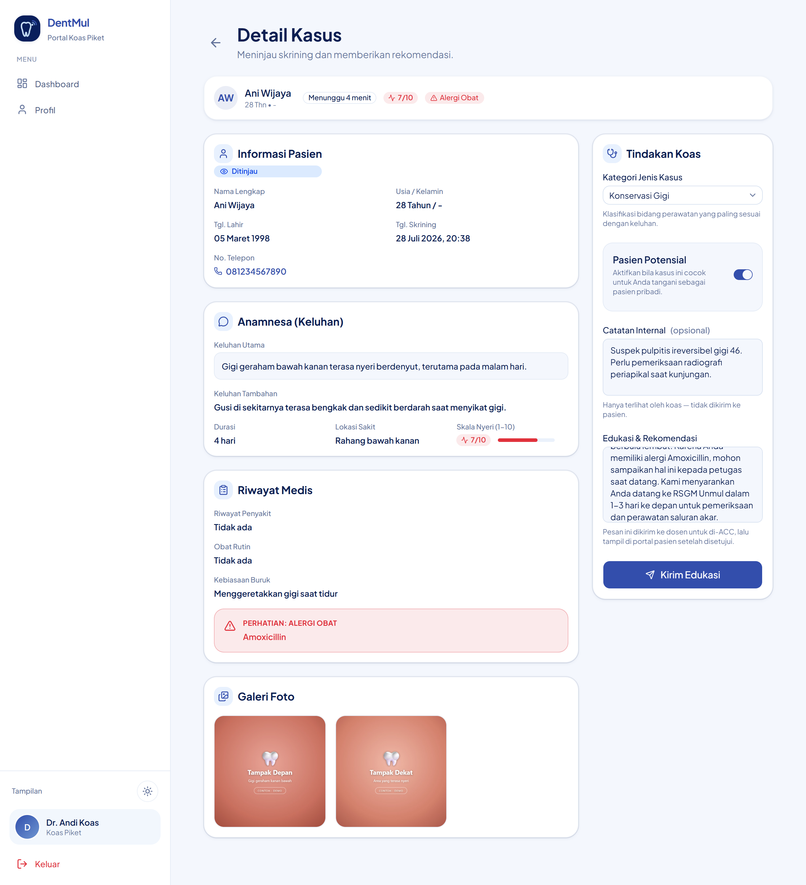
    <figcaption><b>Gambar 4.10</b> — Formulir tinjauan yang sudah terisi lengkap.</figcaption>
  </figure>

  <figure>
    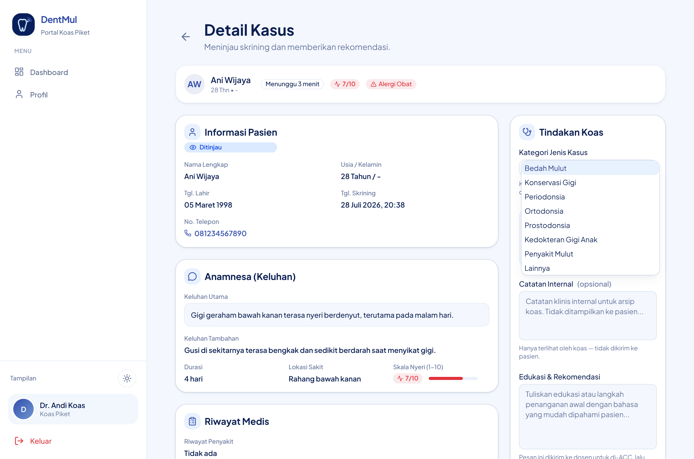
    <figcaption><b>Gambar 4.11</b> — Delapan pilihan <strong>Kategori Jenis Kasus</strong>.</figcaption>
  </figure>

  <figure>
    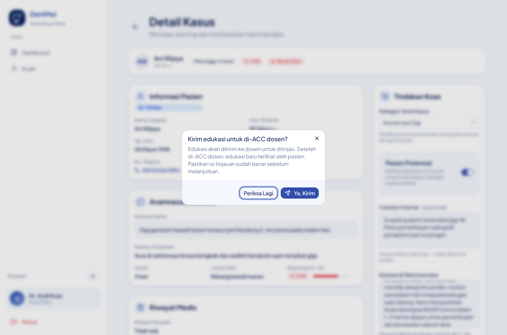
    <figcaption><b>Gambar 4.12</b> — Kotak konfirmasi sebelum edukasi dikirim ke dosen. Tekan <strong>Periksa Lagi</strong> bila masih ingin menyunting.</figcaption>
  </figure>

  <p>
    Setelah terkirim, status kasus menjadi <strong>Menunggu ACC</strong> dan formulir berubah
    menjadi ringkasan yang tidak dapat disunting. Pasien <strong>belum</strong> dapat melihat
    edukasi tersebut sampai dosen menyetujuinya.
  </p>

  <figure class="wide">
    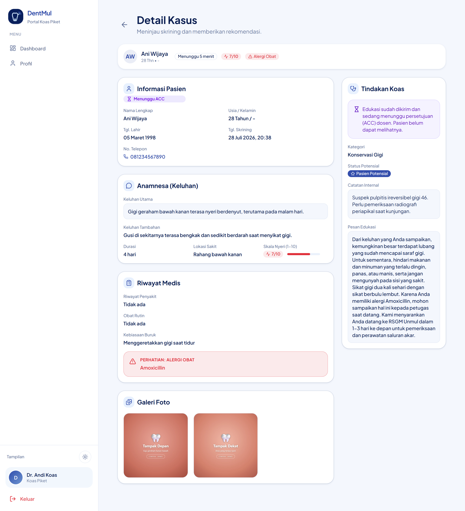
    <figcaption><b>Gambar 4.13</b> — Tampilan kasus berstatus <strong>Menunggu ACC</strong>.</figcaption>
  </figure>

  <div class="box">
    <span class="t">Kasus tidak dibagi per koas</span>
    <p>
      Semua koas melihat antrean yang sama dan boleh mengambil kasus mana pun. Koas yang
      pertama mengirim edukasi menjadi pemilik kasus tersebut. Bila muncul pesan
      <em>“Kasus ini tidak dapat dikirim ulang…”</em>, berarti rekan koas lain sudah lebih
      dahulu mengirim edukasi untuk kasus tersebut.
    </p>
  </div>

  <h3 id="s45">4.5 Bila edukasi ditolak dosen</h3>
  <p>
    Dosen dapat mengembalikan edukasi Anda untuk direvisi. Bila itu terjadi, status kasus
    kembali menjadi <strong>Ditinjau</strong> dan pada kotak Tindakan Koas muncul spanduk
    merah beserta alasan penolakannya.
  </p>

  <figure class="narrow">
    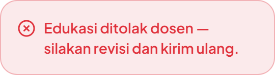
    <figcaption><b>Gambar 4.14</b> — Spanduk peringatan ketika edukasi dikembalikan oleh dosen.</figcaption>
  </figure>

  <figure class="wide">
    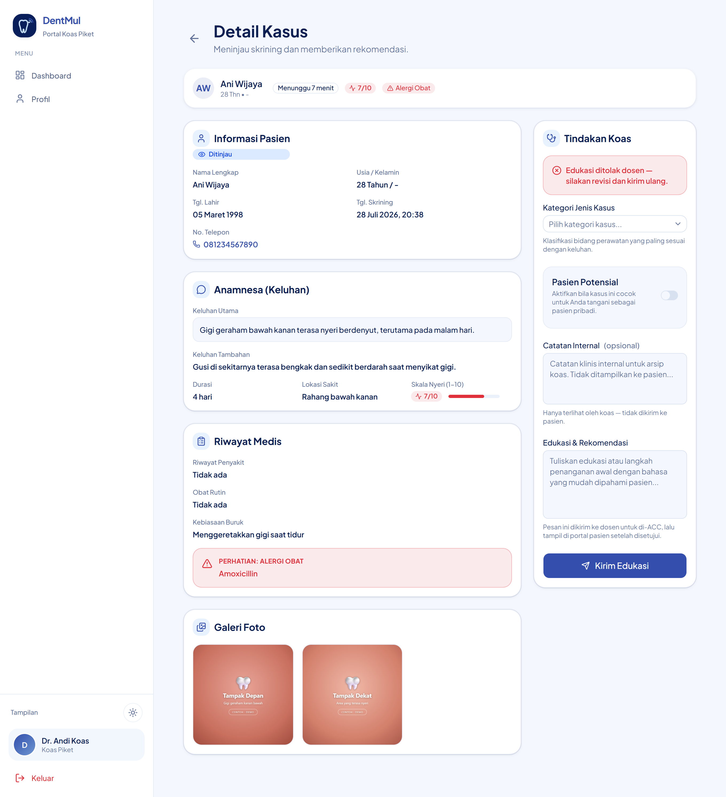
    <figcaption><b>Gambar 4.15</b> — Formulir terbuka kembali agar Anda dapat memperbaiki isi edukasi, lalu mengirimnya ulang.</figcaption>
  </figure>

  <p>Perbaiki isian sesuai catatan dosen, lalu tekan <strong>Kirim Edukasi</strong> sekali lagi.</p>

  <h3 id="s46">4.6 Profil dan nomor WhatsApp</h3>
  <p>
    Pada menu <strong>Profil</strong>, Anda dapat mengubah <strong>Nama Lengkap</strong> dan
    <strong>No Telepon</strong>. Alamat surel hanya dapat diubah oleh Admin.
  </p>

  <div class="box warn">
    <span class="t">Wajib diisi</span>
    <p>
      Tombol <strong>Chat WhatsApp Koas</strong> di halaman pasien hanya muncul bila
      <strong>No Telepon</strong> Anda terisi. Mohon lengkapi nomor tersebut agar pasien
      dapat berkonsultasi lanjutan.
    </p>
  </div>

  <figure>
    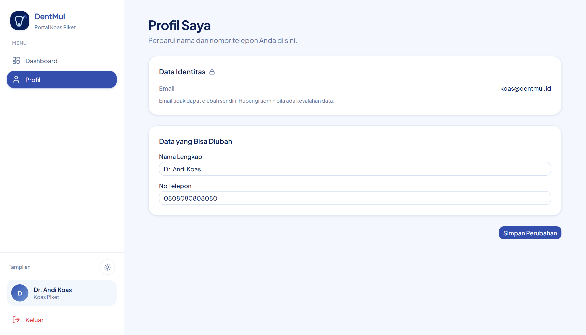
    <figcaption><b>Gambar 4.16</b> — Halaman <strong>Profil Saya</strong> untuk koas.</figcaption>
  </figure>
</section>

<!-- ==================== BAB 5 ==================== -->
<section class="chapter" id="bab5">
  <div class="chapter-head">
    <div class="chapter-num">05</div>
    <div>
      <h2>Panduan Dosen Pembimbing</h2>
      <p class="sub">Memeriksa edukasi yang diajukan koas, lalu menyetujui atau mengembalikannya untuk direvisi.</p>
    </div>
  </div>

  <h3 id="s51">5.1 Antrean persetujuan</h3>
  <p>
    Setelah masuk sebagai dosen, Anda berada di <strong>Dashboard</strong> Portal Dosen
    Pembimbing. Daftar <strong>Antrean Persetujuan</strong> memuat semua edukasi yang sedang
    menunggu ACC, diurutkan dengan <strong>yang paling lama menunggu di posisi teratas</strong>.
  </p>

  <figure class="wide">
    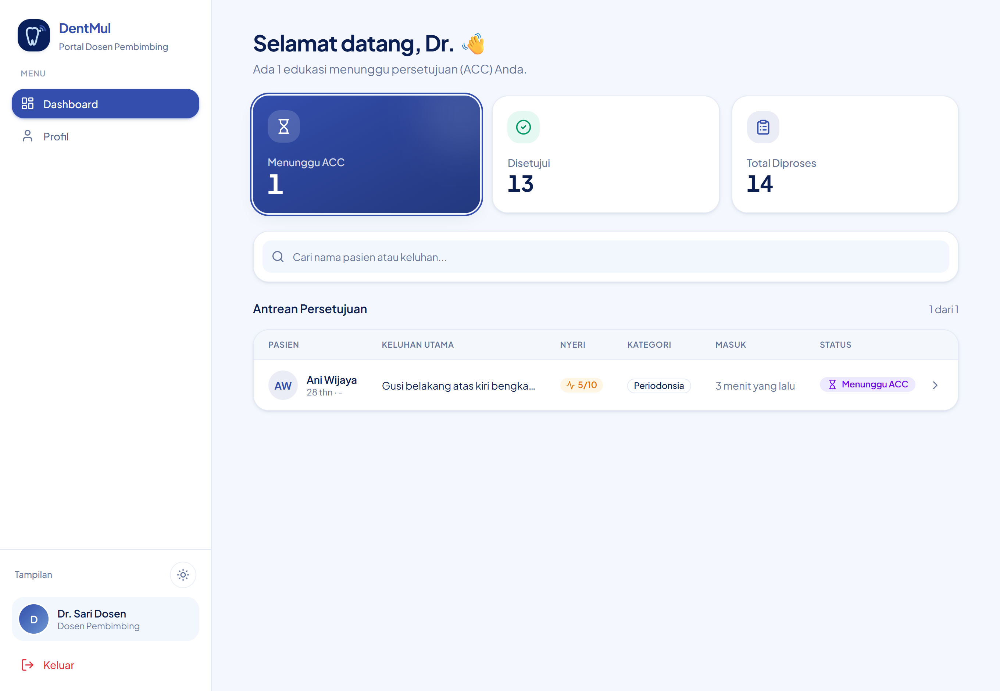
    <figcaption><b>Gambar 5.1</b> — Dashboard dosen dengan antrean persetujuan.</figcaption>
  </figure>

  <figure>
    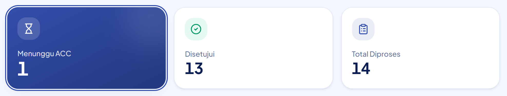
    <figcaption><b>Gambar 5.2</b> — Tiga kartu ringkasan pada dashboard dosen.</figcaption>
  </figure>

  <table>
    <thead><tr><th style="width: 28%">Kartu</th><th>Artinya</th></tr></thead>
    <tbody>
      <tr><td><strong>Menunggu ACC</strong></td><td>Jumlah edukasi yang menunggu keputusan Anda.</td></tr>
      <tr><td><strong>Disetujui</strong></td><td>Jumlah edukasi yang sudah Anda setujui.</td></tr>
      <tr><td><strong>Total Diproses</strong></td><td>Gabungan keduanya.</td></tr>
    </tbody>
  </table>

  <div class="box">
    <span class="t">Antrean bersama</span>
    <p>
      Seluruh dosen melihat antrean yang sama. Kasus tidak dibagi per dosen, sehingga siapa
      pun yang lebih dahulu memeriksa dapat langsung memberikan keputusan.
    </p>
  </div>

  <h3 id="s52">5.2 Menyetujui (ACC) edukasi</h3>
  <ol class="steps">
    <li><p>Tekan salah satu baris antrean untuk membuka halaman <strong>Tinjau Edukasi</strong>.</p></li>
    <li><p>Periksa data pasien di kolom kiri — anamnesa, riwayat medis, dan foto.</p></li>
    <li><p>Baca kotak <strong>Persetujuan Edukasi</strong> di kolom kanan: siapa koas pengaju, kategori, status potensial, catatan internal, dan isi pesan edukasi.</p></li>
    <li><p>Bila sudah sesuai, tekan <strong>ACC — Setujui &amp; Kirim ke Pasien</strong>.</p></li>
  </ol>

  <figure class="wide">
    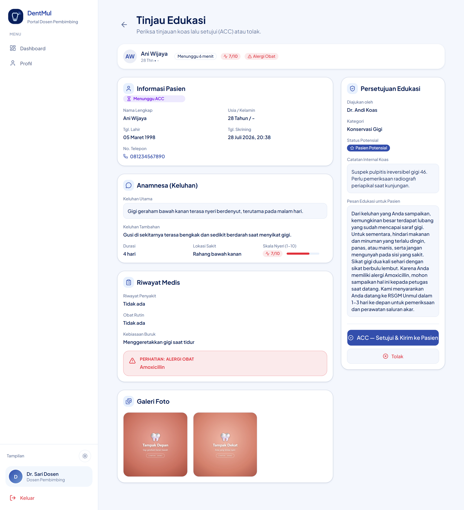
    <figcaption><b>Gambar 5.3</b> — Halaman <strong>Tinjau Edukasi</strong>.</figcaption>
  </figure>

  <figure class="narrow">
    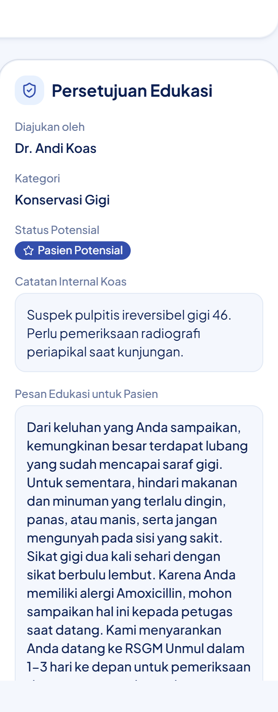
    <figcaption><b>Gambar 5.4</b> — Kotak <strong>Persetujuan Edukasi</strong> beserta kedua tombol keputusan.</figcaption>
  </figure>

  <p>
    Setelah di-ACC, status kasus menjadi <strong>Selesai</strong> dan edukasi tersebut
    <strong>langsung dapat dibaca pasien</strong> di portalnya.
  </p>

  <figure class="wide">
    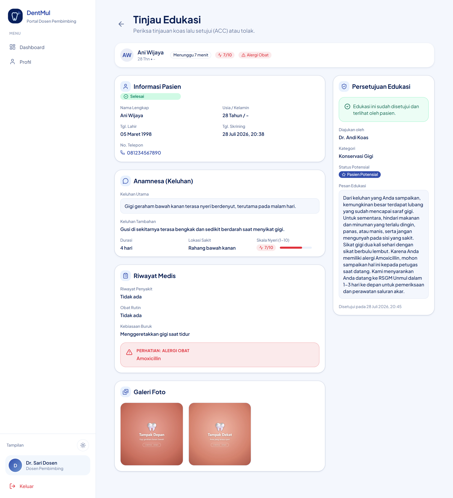
    <figcaption><b>Gambar 5.5</b> — Kasus yang sudah disetujui menampilkan spanduk hijau beserta tanggal persetujuan.</figcaption>
  </figure>

  <h3 id="s53">5.3 Menolak edukasi</h3>
  <p>
    Bila edukasi perlu diperbaiki, tekan tombol <strong>Tolak</strong>. Sebuah kotak akan
    meminta <strong>alasan penolakan</strong> — bersifat opsional, maksimal 500 karakter,
    dan akan ditampilkan kepada koas.
  </p>

  <figure>
    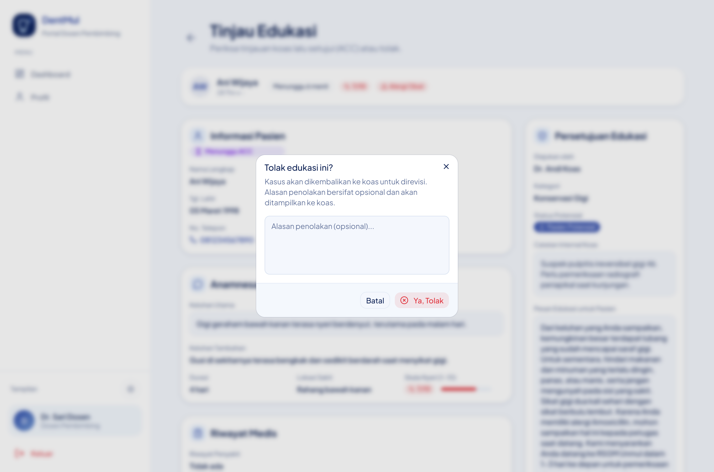
    <figcaption><b>Gambar 5.6</b> — Kotak konfirmasi penolakan. Tekan <strong>Ya, Tolak</strong> untuk mengembalikan kasus kepada koas.</figcaption>
  </figure>

  <div class="box tip">
    <span class="t">Saran</span>
    <p>
      Meski alasan penolakan bersifat opsional, sangat dianjurkan untuk mengisinya. Alasan
      yang jelas dan spesifik membantu koas memperbaiki edukasinya dengan cepat dan tepat,
      sekaligus menjadi sarana pembelajaran.
    </p>
  </div>

  <p>
    Setelah ditolak, kasus kembali berstatus <strong>Ditinjau</strong> dan hilang dari
    antrean Anda sampai koas mengirimkannya kembali.
  </p>

  <figure class="wide">
    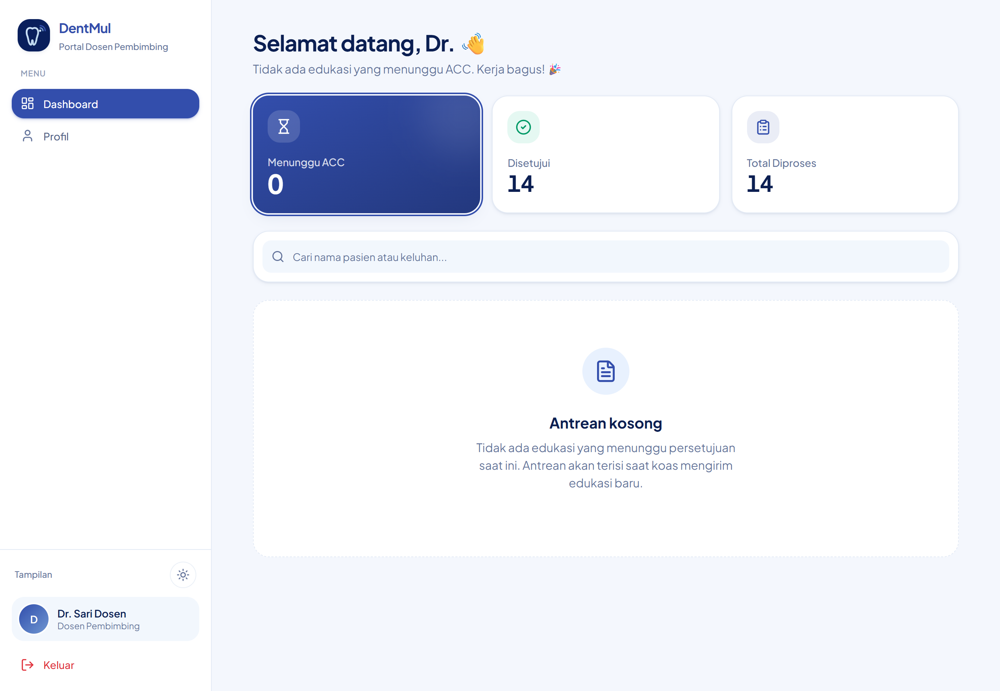
    <figcaption><b>Gambar 5.7</b> — Daftar <strong>Edukasi Disetujui</strong> sebagai riwayat pekerjaan Anda.</figcaption>
  </figure>

  <h3 id="s54">5.4 Profil</h3>
  <p>
    Melalui menu <strong>Profil</strong>, Anda dapat memperbarui <strong>Nama Lengkap</strong>
    dan <strong>No Telepon</strong>. Alamat surel hanya dapat diubah oleh Admin. Nama yang
    Anda cantumkan di sini tampil pada catatan persetujuan kasus.
  </p>

  <figure>
    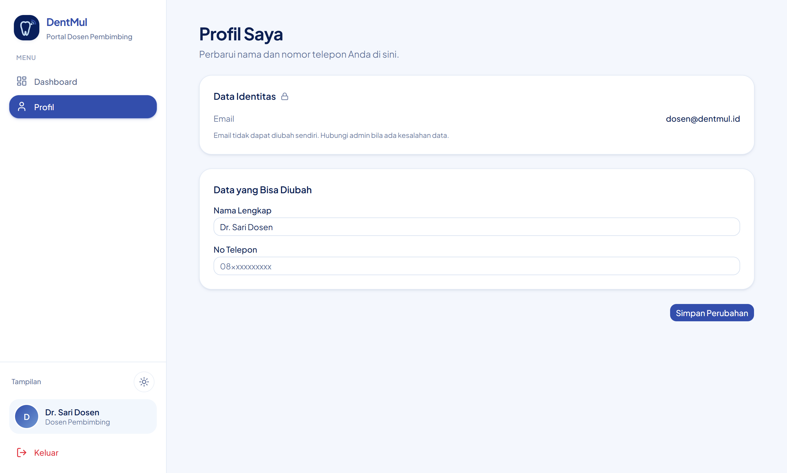
    <figcaption><b>Gambar 5.8</b> — Halaman <strong>Profil Saya</strong> untuk dosen pembimbing.</figcaption>
  </figure>
</section>

<!-- ==================== BAB 6 ==================== -->
<section class="chapter" id="bab6">
  <div class="chapter-head">
    <div class="chapter-num">06</div>
    <div>
      <h2>Panduan Admin</h2>
      <p class="sub">Mengelola seluruh akun pengguna DentMul: menambah, menyunting, mereset password, serta mengaktifkan dan menonaktifkan akun.</p>
    </div>
  </div>

  <div class="box">
    <span class="t">Lingkup kewenangan Admin</span>
    <p>
      Admin <strong>hanya mengelola akun pengguna</strong>. Admin tidak dapat melihat,
      mengubah, atau menghapus data skrining pasien. Pemisahan ini sengaja dibuat untuk
      menjaga kerahasiaan data medis.
    </p>
  </div>

  <h3 id="s61">6.1 Dashboard Admin</h3>
  <p>
    Halaman <strong>Dashboard Admin</strong> menampilkan tujuh kartu ringkasan jumlah akun,
    serta pintasan menuju halaman <strong>Kelola User</strong>.
  </p>

  <figure class="wide">
    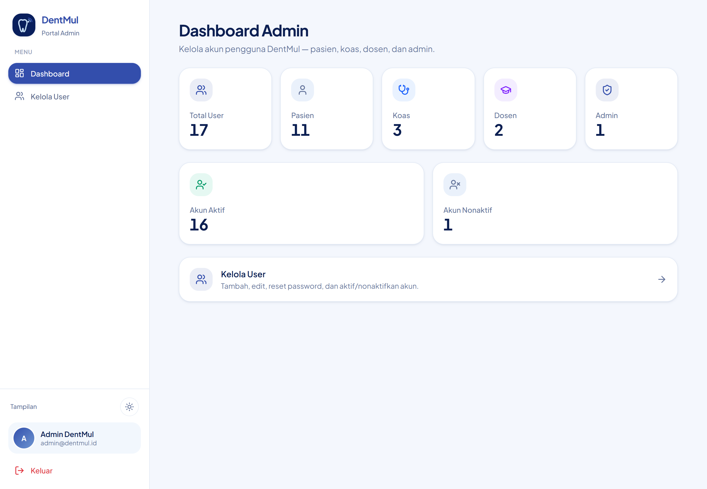
    <figcaption><b>Gambar 6.1</b> — <strong>Dashboard Admin</strong> dengan tujuh kartu ringkasan dan pintasan <strong>Kelola User</strong>.</figcaption>
  </figure>

  <table>
    <thead><tr><th style="width: 30%">Kartu</th><th>Artinya</th></tr></thead>
    <tbody>
      <tr><td><strong>Total User</strong></td><td>Seluruh akun yang terdaftar di sistem.</td></tr>
      <tr><td><strong>Pasien</strong> · <strong>Koas</strong> · <strong>Dosen</strong> · <strong>Admin</strong></td><td>Jumlah akun untuk masing-masing peran.</td></tr>
      <tr><td><strong>Akun Aktif</strong></td><td>Akun yang dapat masuk ke aplikasi.</td></tr>
      <tr><td><strong>Akun Nonaktif</strong></td><td>Akun yang diblokir dan tidak dapat masuk.</td></tr>
    </tbody>
  </table>

  <h3 id="s62">6.2 Menambah dan mengubah user</h3>
  <p>
    Buka menu <strong>Kelola User</strong>. Halaman ini memuat kolom pencarian
    (<strong>Cari nama, email, atau NIK…</strong>), penyaring <strong>Role</strong> dan
    <strong>Status</strong>, serta tabel berisi seluruh akun.
  </p>

  <figure class="wide">
    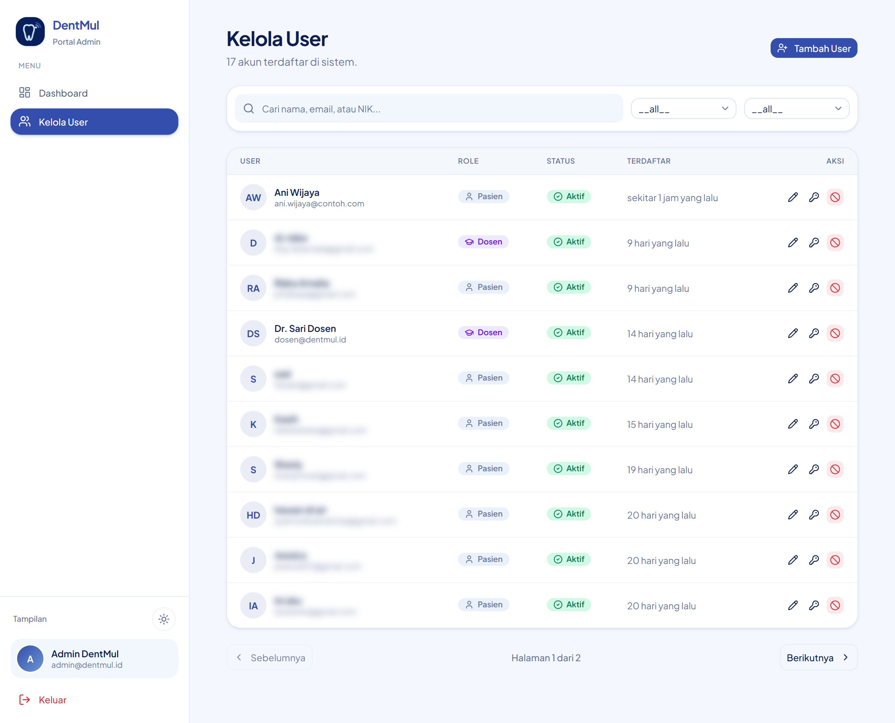
    <figcaption><b>Gambar 6.2</b> — Halaman <strong>Kelola User</strong>. Kolom <strong>Aksi</strong> di ujung kanan berisi tiga ikon: pensil (Edit user), kunci (Reset password), dan lingkaran silang (Nonaktifkan).</figcaption>
  </figure>

  <figure class="wide">
    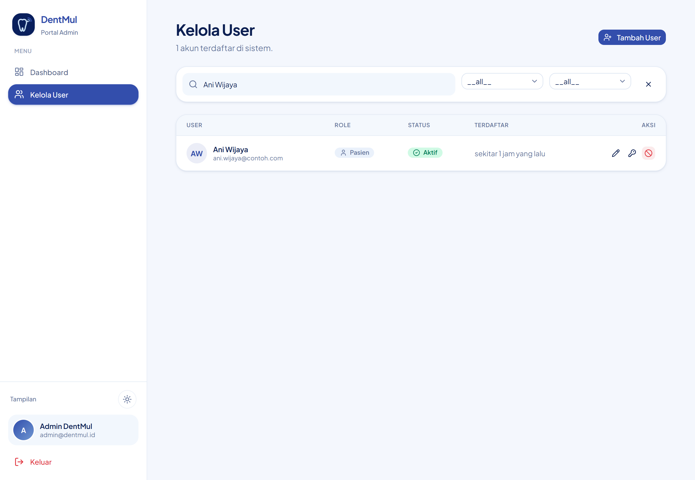
    <figcaption><b>Gambar 6.3</b> — Hasil pencarian dengan kata kunci nama. Pencarian juga menerima alamat surel maupun NIK.</figcaption>
  </figure>

  <h4>Menambah user baru</h4>
  <ol class="steps">
    <li><p>Tekan tombol <strong>Tambah User</strong> di kanan atas.</p></li>
    <li><p>Isi <strong>Nama Lengkap</strong>, <strong>Email</strong>, dan <strong>Password</strong> (minimal 6 karakter).</p></li>
    <li><p>Pilih <strong>Role</strong>: Pasien, Koas, Dosen, atau Admin.</p></li>
    <li><p>Bila role yang dipilih adalah <strong>Pasien</strong>, akan muncul kolom tambahan yang wajib diisi: <strong>NIK</strong> (16 digit), <strong>Tanggal Lahir</strong>, <strong>Jenis Kelamin</strong>, dan <strong>Alamat</strong>.</p></li>
    <li><p>Tekan <strong>Buat User</strong>.</p></li>
  </ol>

  <figure class="wide">
    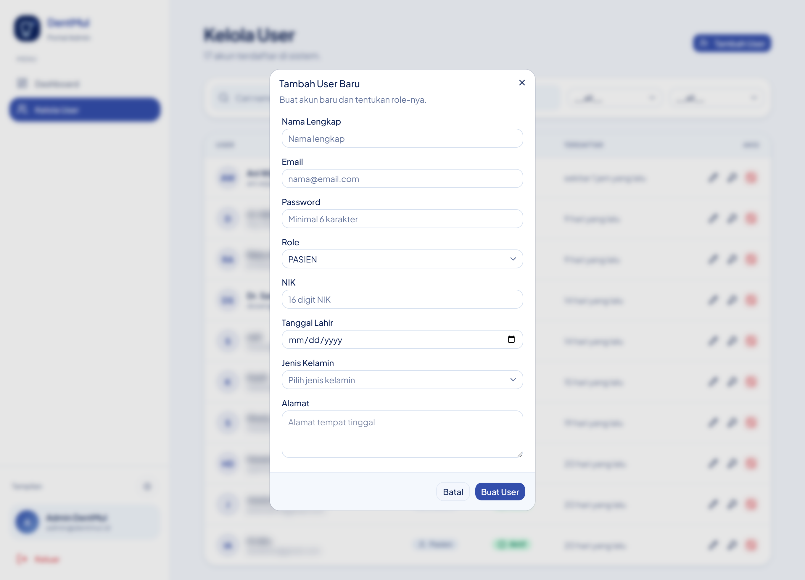
    <figcaption><b>Gambar 6.4</b> — Dialog <strong>Tambah User Baru</strong> dengan role <strong>PASIEN</strong> terpilih.</figcaption>
  </figure>

  <div class="box">
    <span class="t">Kolom yang muncul sesuai role</span>
    <p>
      Untuk role <strong>Koas</strong>, <strong>Dosen</strong>, dan <strong>Admin</strong>,
      formulir hanya meminta Nama Lengkap, Email, Password, dan Role. Kolom
      <strong>NIK</strong>, <strong>Tanggal Lahir</strong>, <strong>Jenis Kelamin</strong>,
      dan <strong>Alamat</strong> hanya muncul — dan wajib diisi — bila role yang dipilih
      adalah <strong>Pasien</strong>.
    </p>
  </div>

  <h4>Menyunting user</h4>
  <p>
    Tekan ikon pensil pada baris yang bersangkutan. Isi formulir <strong>Edit User</strong>
    sama seperti saat membuat, hanya saja kolom password tidak ada dan muncul sakelar
    <strong>Akun Aktif</strong>.
  </p>

  <figure class="wide">
    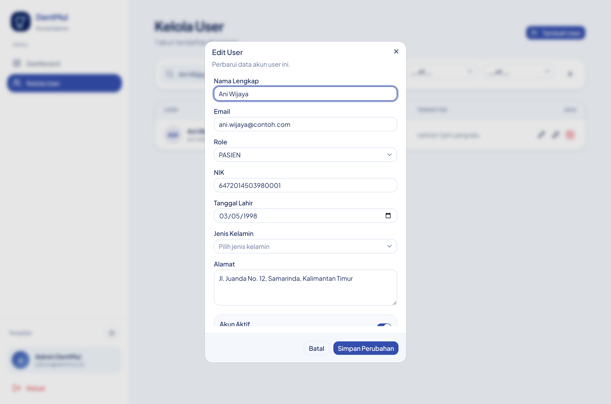
    <figcaption><b>Gambar 6.5</b> — Dialog <strong>Edit User</strong>. Gulir ke bawah untuk menemukan sakelar <strong>Akun Aktif</strong>, lalu tekan <strong>Simpan Perubahan</strong>.</figcaption>
  </figure>

  <h3 id="s63">6.3 Reset password dan penonaktifan</h3>
  <ul class="plain">
    <li><strong>Reset Password</strong> — tekan ikon kunci pada baris user, masukkan password baru (minimal 6 karakter), lalu tekan <strong>Reset Password</strong>. Sampaikan password baru itu kepada pemilik akun.</li>
    <li><strong>Nonaktifkan / Aktifkan</strong> — tekan ikon di ujung baris. Akun yang dinonaktifkan <strong>tidak dapat masuk sama sekali</strong>.</li>
  </ul>

  <figure class="wide">
    
    <figcaption><b>Gambar 6.6</b> — Dialog <strong>Reset Password</strong>. Nama pemilik akun ditampilkan pada keterangan agar Anda tidak salah sasaran.</figcaption>
  </figure>

  <div class="box warn">
    <span class="t">Akun nonaktif dan pesan galat</span>
    <p>
      Ketika pemilik akun nonaktif mencoba masuk, yang muncul adalah pesan
      <em>“Email atau password salah!”</em> — bukan pesan khusus. Karena itu, bila ada
      pengguna melapor tidak bisa masuk padahal yakin kata sandinya benar, periksa dahulu
      status aktif akunnya.
    </p>
  </div>

  <div class="box danger">
    <span class="t">Pengaman yang tidak bisa dilanggar</span>
    <p>
      Sistem akan menolak tindakan berikut demi mencegah Anda mengunci diri sendiri:
      menurunkan role akun Anda sendiri, menonaktifkan akun Anda sendiri, serta
      menurunkan atau menonaktifkan <strong>admin aktif yang terakhir</strong>.
    </p>
  </div>

  <div class="box">
    <span class="t">Tidak ada penghapusan permanen</span>
    <p>
      DentMul tidak menyediakan fitur hapus user. Untuk mencabut akses seseorang, gunakan
      <strong>Nonaktifkan</strong> — data dan riwayat kasusnya tetap tersimpan utuh.
    </p>
  </div>
</section>

<!-- ==================== BAB 7 ==================== -->
<section class="chapter" id="bab7">
  <div class="chapter-head">
    <div class="chapter-num">07</div>
    <div>
      <h2>Referensi Cepat</h2>
      <p class="sub">Tabel rangkuman yang bisa Anda buka sewaktu-waktu tanpa membaca ulang seluruh bab.</p>
    </div>
  </div>

  <h3>7.1 Status kasus</h3>
  <table>
    <thead>
      <tr><th style="width: 20%">Label</th><th style="width: 26%">Bagi pasien</th><th style="width: 27%">Bagi koas</th><th>Bagi dosen</th></tr>
    </thead>
    <tbody>
      <tr>
        <td><span class="badge b-wait">Menunggu</span></td>
        <td>Keluhan mengantre, belum dibuka.</td>
        <td>Perlu diambil dan ditinjau.</td>
        <td>Belum masuk antrean Anda.</td>
      </tr>
      <tr>
        <td><span class="badge b-review">Ditinjau</span></td>
        <td>Sedang dinilai koas.</td>
        <td>Sudah dibuka; formulir tinjauan aktif.</td>
        <td>Belum masuk antrean Anda.</td>
      </tr>
      <tr>
        <td><span class="badge b-acc">Menunggu ACC</span></td>
        <td>Menunggu persetujuan dosen.</td>
        <td>Sudah dikirim; tidak dapat disunting.</td>
        <td>Ada di <strong>Antrean Persetujuan</strong> Anda.</td>
      </tr>
      <tr>
        <td><span class="badge b-done">Selesai</span></td>
        <td>Hasil dapat dibaca.</td>
        <td>Selesai ditangani.</td>
        <td>Tercatat sebagai <strong>Disetujui</strong>.</td>
      </tr>
    </tbody>
  </table>

  <h3>7.2 Kategori jenis kasus</h3>
  <table class="compact">
    <thead><tr><th style="width: 32%">Kategori</th><th>Cakupan umum</th></tr></thead>
    <tbody>
      <tr><td><strong>Bedah Mulut</strong></td><td>Pencabutan, gigi impaksi, tindakan bedah minor rongga mulut.</td></tr>
      <tr><td><strong>Konservasi Gigi</strong></td><td>Gigi berlubang, penambalan, perawatan saluran akar.</td></tr>
      <tr><td><strong>Periodonsia</strong></td><td>Masalah gusi dan jaringan penyangga gigi, karang gigi.</td></tr>
      <tr><td><strong>Ortodonsia</strong></td><td>Susunan gigi tidak rapi, gigitan tidak sejajar, kawat gigi.</td></tr>
      <tr><td><strong>Prostodonsia</strong></td><td>Gigi tiruan, mahkota, jembatan gigi.</td></tr>
      <tr><td><strong>Kedokteran Gigi Anak</strong></td><td>Keluhan gigi pada pasien anak.</td></tr>
      <tr><td><strong>Penyakit Mulut</strong></td><td>Sariawan berulang, lesi, dan kelainan jaringan lunak mulut.</td></tr>
      <tr><td><strong>Lainnya</strong></td><td>Kasus yang tidak termasuk kategori mana pun di atas.</td></tr>
    </tbody>
  </table>

  <h3>7.3 Aturan pengisian dan batasan</h3>
  <table class="compact">
    <thead><tr><th style="width: 34%">Isian</th><th style="width: 30%">Aturan</th><th>Berlaku untuk</th></tr></thead>
    <tbody>
      <tr><td>Nama Lengkap</td><td>Minimal 3 karakter</td><td>Semua peran</td></tr>
      <tr><td>Password</td><td>Minimal 6 karakter</td><td>Semua peran</td></tr>
      <tr><td>Email</td><td>Harus unik, otomatis dijadikan huruf kecil</td><td>Semua peran</td></tr>
      <tr><td>NIK</td><td>Tepat 16 digit angka, harus unik</td><td>Pasien</td></tr>
      <tr><td>No Telepon</td><td>10–15 angka, boleh diawali tanda +</td><td>Semua peran</td></tr>
      <tr><td>Tanggal Lahir</td><td>Wajib; tidak boleh di masa depan</td><td>Pasien</td></tr>
      <tr><td>Alamat</td><td>Minimal 5 karakter</td><td>Pasien</td></tr>
      <tr><td>Keluhan Utama</td><td>Wajib, minimal 5 karakter</td><td>Pasien</td></tr>
      <tr><td>Durasi Keluhan</td><td>Wajib diisi</td><td>Pasien</td></tr>
      <tr><td>Skala Nyeri</td><td>Angka 1 sampai 10</td><td>Pasien</td></tr>
      <tr><td>Foto skrining</td><td>Maksimal 5 foto, JPG/PNG, maksimal 5 MB per foto</td><td>Pasien</td></tr>
      <tr><td>Kategori Jenis Kasus</td><td>Wajib dipilih</td><td>Koas</td></tr>
      <tr><td>Edukasi &amp; Rekomendasi</td><td>Minimal 10 karakter</td><td>Koas</td></tr>
      <tr><td>Alasan penolakan</td><td>Opsional, maksimal 500 karakter</td><td>Dosen</td></tr>
      <tr><td>Jumlah baris per halaman</td><td>10 baris</td><td>Koas, Dosen, Admin</td></tr>
    </tbody>
  </table>

  <h3>7.4 Siapa boleh mengubah apa</h3>
  <table class="compact">
    <thead><tr><th style="width: 32%">Data</th><th style="width: 34%">Dapat diubah sendiri?</th><th>Cara mengubah</th></tr></thead>
    <tbody>
      <tr><td>Nama, Email, NIK pasien</td><td>Tidak</td><td>Hubungi Admin</td></tr>
      <tr><td>No Telepon, Tanggal Lahir, Jenis Kelamin, Alamat pasien</td><td>Ya</td><td>Menu <strong>Profil</strong></td></tr>
      <tr><td>Nama dan No Telepon koas/dosen</td><td>Ya</td><td>Menu <strong>Profil</strong></td></tr>
      <tr><td>Email koas/dosen</td><td>Tidak</td><td>Hubungi Admin</td></tr>
      <tr><td>Isi skrining yang sudah dikirim</td><td>Tidak</td><td>Kirim skrining baru</td></tr>
      <tr><td>Password</td><td>Tidak</td><td>Hubungi Admin untuk Reset Password</td></tr>
    </tbody>
  </table>
</section>

<!-- ==================== BAB 8 ==================== -->
<section class="chapter" id="bab8">
  <div class="chapter-head">
    <div class="chapter-num">08</div>
    <div>
      <h2>Tanya Jawab dan Pemecahan Masalah</h2>
      <p class="sub">Pertanyaan yang paling sering muncul beserta cara mengatasinya.</p>
    </div>
  </div>

  <h3>Seputar layanan</h3>
  <div class="qa">
    <div>
      <p class="q">Apakah layanan skrining ini gratis?</p>
      <p class="a">Ya. DentMul disediakan gratis sebagai langkah awal sebelum Anda datang ke RSGM Universitas Mulawarman.</p>
    </div>
    <div>
      <p class="q">Siapa yang meninjau keluhan saya?</p>
      <p class="a">Seorang Dokter Gigi Muda (DGM/koas) FKG Unmul, di bawah supervisi dosen pembimbing dan DPJP. Setiap edukasi wajib disetujui dosen sebelum sampai kepada Anda.</p>
    </div>
    <div>
      <p class="q">Berapa lama sampai saya menerima hasil?</p>
      <p class="a">Bergantung pada antrean dan jam kerja koas piket. Anda dapat memantau perkembangannya kapan saja melalui label status di menu <strong>Riwayat</strong>.</p>
    </div>
    <div>
      <p class="q">Apakah data dan foto saya aman?</p>
      <p class="a">Data hanya digunakan untuk keperluan skrining awal dan hanya dapat diakses oleh tim yang menangani kasus Anda di bawah supervisi.</p>
    </div>
    <div>
      <p class="q">Kapan saya tetap harus datang ke RSGM?</p>
      <p class="a">Skrining ini bersifat awal dan bukan pengganti pemeriksaan langsung. Bila mengalami nyeri hebat, pembengkakan, demam, atau perdarahan yang tidak berhenti, segera datangi fasilitas kesehatan terdekat tanpa menunggu hasil.</p>
    </div>
  </div>

  <h3>Kendala saat masuk</h3>
  <div class="qa">
    <div>
      <p class="q">Muncul pesan “Email atau password salah!” padahal saya yakin benar.</p>
      <p class="a">Periksa huruf besar/kecil pada kata sandi dan pastikan tidak ada spasi berlebih pada alamat surel. Bila tetap gagal, kemungkinan akun Anda dinonaktifkan oleh Admin — hubungi Admin untuk memastikannya.</p>
    </div>
    <div>
      <p class="q">Saya lupa kata sandi.</p>
      <p class="a">Hubungi Admin untuk melakukan <strong>Reset Password</strong>. Saat ini belum tersedia pemulihan kata sandi mandiri lewat surel.</p>
    </div>
    <div>
      <p class="q">Muncul pesan “NIK sudah terdaftar!” saat mendaftar.</p>
      <p class="a">NIK tersebut sudah dipakai akun lain. Periksa kembali 16 angkanya. Bila sudah benar dan Anda merasa belum pernah mendaftar, hubungi Admin.</p>
    </div>
  </div>

  <h3>Kendala saat mengirim skrining</h3>
  <div class="qa">
    <div>
      <p class="q">Foto saya ditolak saat diunggah.</p>
      <p class="a">Pastikan berkasnya berupa gambar JPG atau PNG, ukurannya tidak melebihi 5 MB, dan jumlahnya tidak lebih dari 5 foto. Bila foto dari kamera terlalu besar, perkecil resolusinya terlebih dahulu.</p>
    </div>
    <div>
      <p class="q">Foto pada skrining lama tidak muncul lagi.</p>
      <p class="a">Tautan foto memiliki masa berlaku terbatas demi keamanan. Muat ulang halaman terlebih dahulu; bila tetap tidak muncul, hubungi RSGM Unmul.</p>
    </div>
    <div>
      <p class="q">Saya salah mengetik keluhan. Bisakah diperbaiki?</p>
      <p class="a">Skrining yang sudah terkirim tidak dapat disunting maupun dihapus. Kirimkan skrining baru berisi keterangan yang benar, atau sampaikan koreksi kepada koas lewat WhatsApp setelah hasil keluar.</p>
    </div>
    <div>
      <p class="q">Tombol Kirim Skrining ditekan tetapi tidak terjadi apa-apa.</p>
      <p class="a">Bila Anda melampirkan foto, prosesnya membutuhkan waktu lebih lama. Tunggu sampai selesai dan jangan menutup halaman. Pastikan pula koneksi internet Anda stabil.</p>
    </div>
  </div>

  <h3>Kendala umum</h3>
  <div class="qa">
    <div>
      <p class="q">Muncul halaman “Terjadi kesalahan”.</p>
      <p class="a">Tekan tombol <strong>Coba Lagi</strong>. Bila masih berulang, tunggu beberapa saat lalu muat ulang halaman; kemungkinan koneksi ke server sedang terganggu.</p>
    </div>
    <div>
      <p class="q">Tombol <strong>Chat WhatsApp Koas</strong> tidak muncul di hasil saya.</p>
      <p class="a">Tombol itu hanya tampil bila koas penanggung jawab sudah mengisi nomor telepon pada profilnya. Hubungi RSGM Unmul untuk konsultasi lanjutan.</p>
    </div>
    <div>
      <p class="q">Saya koas, mengapa kasus saya hilang dari daftar “Perlu Ditinjau”?</p>
      <p class="a">Setelah Anda menekan <strong>Kirim Edukasi</strong>, status kasus berubah menjadi Menunggu ACC dan berpindah ke antrean dosen. Kasus akan kembali kepada Anda hanya bila dosen menolaknya.</p>
    </div>
    <div>
      <p class="q">Saya dosen, mengapa antrean saya kosong?</p>
      <p class="a">Berarti semua edukasi sudah diputuskan — atau rekan dosen lain sudah lebih dahulu memprosesnya, karena antrean bersifat bersama.</p>
    </div>
  </div>
</section>

<!-- ==================== LAMPIRAN ==================== -->
<section class="chapter" id="lamp">
  <div class="chapter-head">
    <div class="chapter-num">A</div>
    <div>
      <h2>Lampiran</h2>
      <p class="sub">Glosarium istilah dan informasi kontak.</p>
    </div>
  </div>

  <h3>A.1 Glosarium</h3>
  <dl class="glos">
    <dt>Skrining awal</dt>
    <dd>Penilaian pertama terhadap keluhan pasien untuk menentukan tingkat kegawatan dan langkah selanjutnya. Bukan diagnosis akhir.</dd>

    <dt>Teledentistry</dt>
    <dd>Layanan kedokteran gigi yang dilakukan dari jarak jauh dengan bantuan teknologi informasi.</dd>

    <dt>Anamnesa</dt>
    <dd>Kumpulan keterangan mengenai keluhan dan riwayat kesehatan yang disampaikan pasien.</dd>

    <dt>DGM / Koas</dt>
    <dd>Dokter Gigi Muda, yaitu mahasiswa profesi kedokteran gigi yang menjalani praktik klinik di bawah supervisi.</dd>

    <dt>DPJP</dt>
    <dd>Dokter Penanggung Jawab Pasien, dokter yang bertanggung jawab atas keseluruhan penanganan pasien.</dd>

    <dt>ACC</dt>
    <dd>Singkatan dari <em>accord</em>/persetujuan. Di DentMul berarti dosen menyetujui edukasi koas sehingga dapat dibaca pasien.</dd>

    <dt>Skala nyeri (VAS)</dt>
    <dd>Ukuran tingkat nyeri dari 1 (sangat ringan) sampai 10 (sangat berat) menurut penilaian pasien sendiri.</dd>

    <dt>Pasien Potensial</dt>
    <dd>Penanda internal koas untuk kasus yang dinilai cocok ditangani sebagai pasien pribadi dalam rangka pemenuhan kompetensi klinik.</dd>

    <dt>Catatan Internal</dt>
    <dd>Catatan klinis koas yang hanya terlihat oleh koas dan dosen — tidak pernah ditampilkan kepada pasien.</dd>

    <dt>Kasus</dt>
    <dd>Satu keluhan yang dikirim pasien beserta seluruh proses penanganannya di dalam aplikasi.</dd>
  </dl>

  <div class="closing">
    <h3>Butuh bantuan lebih lanjut?</h3>
    <p>Bila panduan ini belum menjawab pertanyaan Anda, silakan hubungi kami.</p>
    <div class="contact">
      <b>RSGM Universitas Mulawarman</b><br />
      Samarinda, Kalimantan Timur<br />
      Surel: <b>info@rsgm.unmul.ac.id</b><br />
      Jam layanan: <b>Senin–Jumat, 08.00–16.00 WITA</b>
    </div>
    <p style="margin-top: 6mm; font-size: 8.6pt; color: var(--ink-faint)">
      DentMul — RSGM Universitas Mulawarman. Skrining ini bersifat awal dan bukan pengganti
      pemeriksaan langsung oleh dokter gigi.
    </p>
  </div>
</section>
